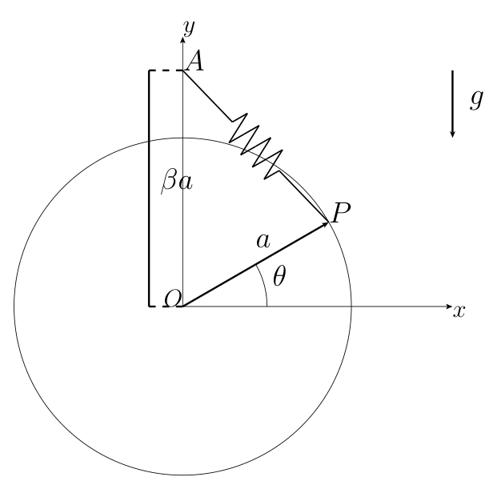
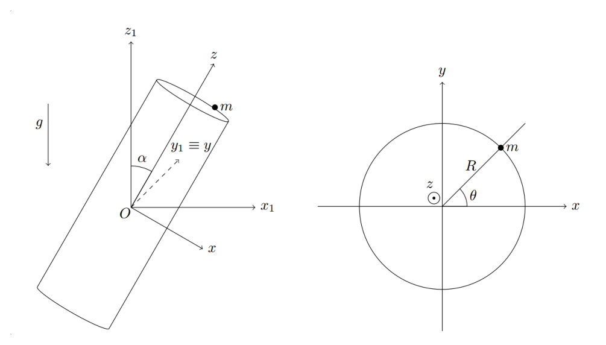
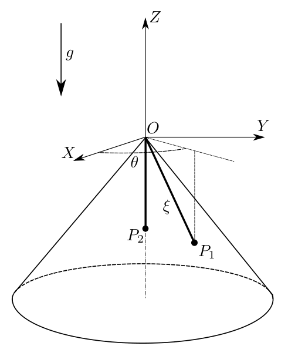
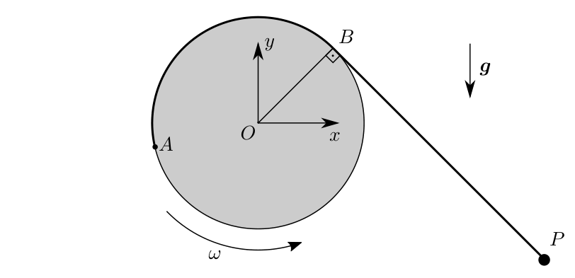
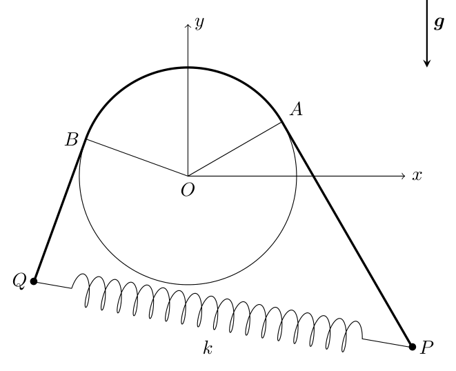
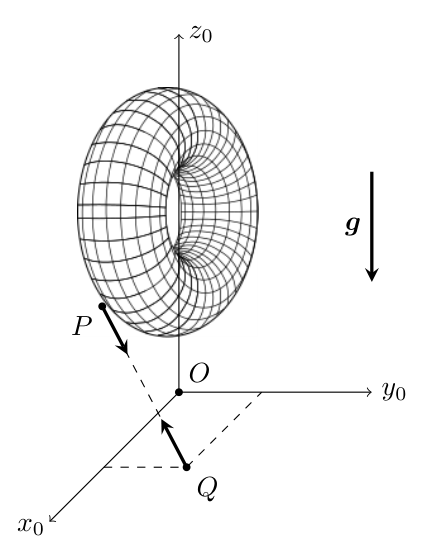
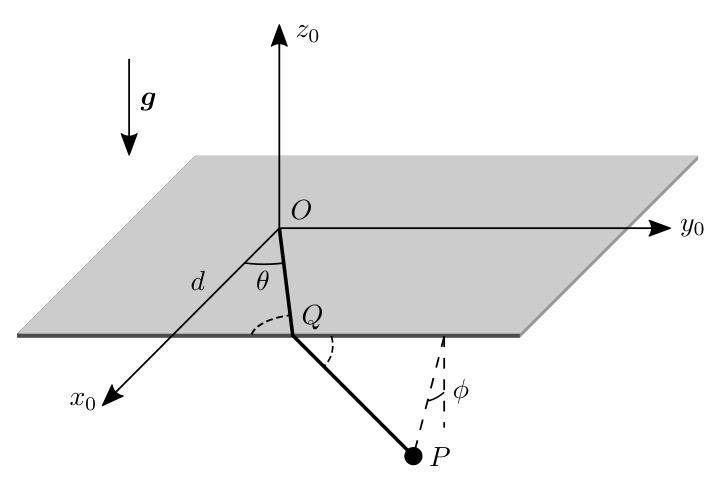
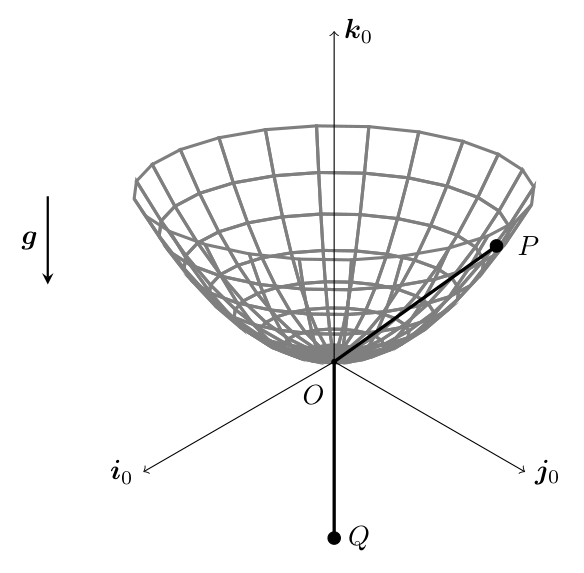
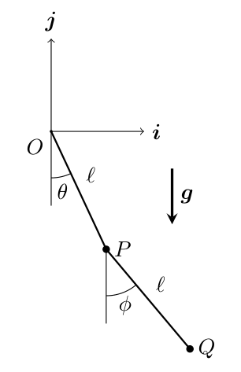

Topic 3: Constraints and Reaction Forces - Problem Sets
A heavy particle of mass $m$ is moving without friction on a cone which is described as:
The frame of reference $Oxyz$ is inertial and $Oz$ is the ascending vertical. The initial coordinates of the particle are $(a, 0, a)$ and its velocity is $\sqrt{ag}\,\mathbf{j}$. Reduce the problem to integral equations and determine the maximum and minumum [sic] value of $z$ along the motion.
Worked Solution [ Click to Expand ]
Reference Frames, Bases and Coordinates
A heavy particle $P$ of mass $m$ slides without friction on the cone of the statement, whose vertex is the origin $O$ and whose axis is the ascending vertical $Oz$. The statement gives the initial position and velocity and asks for the reduction of the problem to integrals and for the extreme values of the height $z$ (Problems.pdf, p. 10). The solution follows the Newtonian approach of Notes.pdf, Sec. 7.1 to Sec. 7.7: constraints and coordinates, frames, kinematics, forces, equations of motion, integration.
| Item | Definition |
|---|---|
| Fixed (inertial) frame | $S_0 = \{O;\ \mathcal B_0\}$, origin at the vertex of the cone (Notes.pdf, Eq. 2.1) |
| Fixed basis | $\mathcal B_0 = \{\mathbf i, \mathbf j, \mathbf k\}$, $\mathbf k$ vertical upward (ascending $Oz$), right-handed |
| Cylindrical basis | $\mathcal B_1 = \{\mathbf e_R, \mathbf e_\theta, \mathbf k\}$, $\mathcal B_0$ turned by the azimuth $\theta$ about $\mathbf k$ (Notes.pdf, Eq. 2.24) |
| Surface basis | $\mathcal B_2 = \{\mathbf e_g, \mathbf e_\theta, \mathbf n\}$: $\mathbf e_g$ along the generator through $P$ (upward), $\mathbf n$ normal to the cone towards its axis; $\mathcal B_1$ turned about $\mathbf e_\theta$ |
| Cylindrical coordinates | $R$ (distance to the axis), $\theta$ (azimuth from the plane $Oxz$), $z$ (height) (Notes.pdf, Eq. 2.23) |
| Constraint | $f(x, y, z) = x^2 + y^2 - z^2 = 0$ with $z \gt 0$ (upper nappe, the one that contains the initial point); in cylindrical coordinates $z = R$ |
| Classification | holonomic (an equation among the coordinates), stationary (no explicit time), smooth (ideal: the reaction is normal to the surface); the particle rides on the inner face of the cone, so the contact is unilateral and is checked by the sign of the reaction ([Lecture 3, Slide 21]) |
| Degrees of freedom | a free particle has 3; one surface constraint leaves 2: $R(t)$ and $\theta(t)$ ([Lecture 3, Slide 4]) |
| Data | $m$ [kg], $g$ [m s$^{-2}$], $a$ [m] |
| Applied force | weight $-mg\,\mathbf k$ |
| Reaction | $\mathbf N = N\,\mathbf n$, one unknown component, since the normal subspace of a surface has dimension 1 (Notes.pdf, Sec. 6.3; Notes.pdf, Sec. 6.4) |
| Initial conditions | $\mathbf r_0^P(0) = a\,\mathbf i + a\,\mathbf k$, $\mathbf v_0^P(0) = \sqrt{ag}\,\mathbf j$: $R(0) = a$, $\theta(0) = 0$, $\dot R(0) = 0$, $\dot\theta(0) = \sqrt{g/a}$ (from $a\dot\theta(0) = \sqrt{ag}$, see the kinematics) |
| Hypotheses | no friction (statement); the reaction may only push the particle away from the surface towards the axis; the result shows that it always does |
Change of Basis and Position Vector
The cylindrical basis is seen from above, along $\mathbf k$: with $\mathbf i$ to the right and $\mathbf j$ up, $\mathbf k$, the cross product of $\mathbf i$ and $\mathbf j$, points out of the paper (⊙), and a positive rotation about $\mathbf k$ is counterclockwise.
View along $\mathbf k$ (⊙). The unit vector $\mathbf e_R$ is $\mathbf i$ turned counterclockwise by $\theta$: its right triangle has hypotenuse 1, adjacent leg $\cos\theta$ along $\mathbf i$ and opposite leg $\sin\theta$ along $\mathbf j$. The unit vector $\mathbf e_\theta$ is $\mathbf j$ turned by the same angle: its adjacent leg $\cos\theta$ lies along $\mathbf j$ and its opposite leg $\sin\theta$ along minus $\mathbf i$, because turning the upward vector counterclockwise leans it to the left; that is the origin of the minus sign.
Units: every entry is a direction cosine, dimensionless: $[1]$; $\theta$ in radians, dimensionless
Meaning: the columns are $\mathbf e_R$, $\mathbf e_\theta$, $\mathbf k$ written in $\mathcal B_0$; $\mathbf e_R$ points horizontally away from the axis, towards the particle.
Units: $[\nabla f] = [\mathrm{L}]$; $\mathbf n$ is dimensionless
Meaning: the normal lies in the meridian plane of $P$ and makes 45 degrees with the vertical; the reaction of the smooth cone can only act along it.
View of the meridian plane of $P$ with $\mathbf e_R$ to the right and $\mathbf k$ up. Since $\mathbf e_\theta$ is the cross product of $\mathbf k$ and $\mathbf e_R$, it points into the paper (⊗) in this view, and a positive rotation about $\mathbf e_\theta$ (right-hand rule, thumb into the paper) is clockwise as seen. The generator $z = R$ rises at 45 degrees, so $\mathbf e_g$ is $\mathbf e_R$ turned counterclockwise by $\pi/4$: Notes.pdf, Eq. 1.19 with the negative angle $-\pi/4$. Its right triangle is the one of the generator itself: hypotenuse $R\sqrt2$ (the distance $OP$), adjacent leg $R$ (horizontal), opposite leg $z$, equal to $R$ (vertical); divided by the hypotenuse the legs give $\cos\frac{\pi}{4}$ and $\sin\frac{\pi}{4}$. The vector $\mathbf n$ is $\mathbf k$ turned by the same angle: adjacent leg along $\mathbf k$, opposite leg along minus $\mathbf e_R$ (turning the upward vector counterclockwise leans it to the left, towards the axis): that is the minus sign.
Units: dimensionless direction cosines: $[1]$
Meaning: $\mathbf e_g$ and $\mathbf e_\theta$ span the tangent plane $V_T$ of the cone at $P$ and $\mathbf n$ spans the normal line $V_N$; the basis separates the directions where the particle may move from the one where the reaction acts.
Units: $[\mathrm{L}]$
Meaning: the two free coordinates parametrise the cone, so the constraint holds identically and never has to be imposed again.
Kinematics
Units: $[\mathrm{T^{-1}}]$
Meaning: the horizontal unit vectors turn with the meridian plane of the particle.
Units: velocity $[\mathrm{L\,T^{-1}}]$: $[\dot R] = [R\dot\theta] = [\mathrm{L\,T^{-1}}]$; acceleration $[\mathrm{L\,T^{-2}}]$: $[\ddot R] = [R\dot\theta^2] = [\dot R\dot\theta] = [\mathrm{L\,T^{-2}}]$
Meaning: the velocity has no component along $\mathbf n$ (its $\mathbf e_R$ and $\mathbf k$ components are equal, so it lies in the tangent plane), as a stationary constraint requires; the initial velocity is horizontal, along the parallel.
Forces and Equations of Motion
The free-body diagram, drawn in the meridian plane, shows the weight and the normal reaction. The frame $S_0$ is inertial, so no inertia force acts.
The weight and the acceleration are written in $\mathcal B_2$ with the inverse relations of the surface basis, read from the rows of $[{}_1R_2]$.
Units: every term of the first two equations in $[\mathrm{L\,T^{-2}}]$; $[N] = [\mathrm{M}][\mathrm{L\,T^{-2}}] = [\mathrm{M\,L\,T^{-2}}]$
Meaning: the two tangent projections are the equations of motion of the two degrees of freedom, free of the reaction; the normal projection gives the reaction once the motion is known (dynamical decoupling). Since $N$ is a sum of positive terms, the cone always pushes the particle towards the axis: the unilateral contact never opens.
Units: $[R^2\dot\theta] = [\mathrm{L^2\,T^{-1}}]$; $[a\sqrt{ag}] = [\mathrm{L}][\mathrm{L\,T^{-1}}] = [\mathrm{L^2\,T^{-1}}]$
Meaning: no force has a moment about the vertical axis (the weight is vertical and the reaction lies in the meridian plane), so this areal quantity is constant: the particle turns faster when it is closer to the axis.
Units: every term in $[\mathrm{L^2\,T^{-2}}]$: $[ga] = [gR] = [\mathrm{L\,T^{-2}}][\mathrm{L}]$; $[a^3 g/R^2] = [\mathrm{L^3}][\mathrm{L\,T^{-2}}]/[\mathrm{L^2}]$; energy $[\mathrm{M\,L^2\,T^{-2}}]$
Meaning: the mechanical energy is conserved: the weight derives from a potential and the reaction of the stationary smooth cone does no work, since it is normal to the velocity.
Answers and Checks
Reduction to integrals
For any data of the same kind (energy constant $E$ per unit mass written as $e$, areal constant $h$, start at $R_0$), the two first integrals give the motion by two quadratures.
Units: $[\Phi] = [\mathrm{L^2\,T^{-2}}]$, so $[dR/\sqrt\Phi] = [\mathrm{L}]/[\mathrm{L\,T^{-1}}] = [\mathrm{T}]$; $[h/R^2] = [\mathrm{T^{-1}}]$
Meaning: the radius, and with it the height, oscillates between the zeros of $\Phi$; the azimuth follows from the radius.
Maximum and minimum of z
Units: $[\Phi] = [\mathrm{L\,T^{-2}}][\mathrm{L^3}]/[\mathrm{L^2}] = [\mathrm{L^2\,T^{-2}}]$; $[\sqrt{g/a}] = [\mathrm{T^{-1}}]$
Meaning: the data are exactly those of a steady circular orbit: the particle runs round the horizontal circle of radius $a$ at height $a$ with constant speed $\sqrt{ag}$; the height neither rises nor falls.
Units: $[\mathrm{M\,L\,T^{-2}}]$
Meaning: the vertical part of the reaction carries the weight and its horizontal part, pointing to the axis, supplies the centripetal force $m v^2/a$ with $v^2 = ag$; the cone pushes, so the contact holds.
If the start radius is moved to $a$ plus a small $\rho$ with the same areal constant $h$, the meridian equation is linearised in $\rho$.
Units: $[\omega_\rho] = [\mathrm{T^{-1}}]$
Meaning: the orbit is stable: a small disturbance makes the height oscillate about $a$ instead of drifting away, so the extreme values of $z$ stay close to $a$.
| Part of the statement | Answer |
|---|---|
| Equations of motion | $2\ddot R - R\dot\theta^2 + g = 0$, $2\dot R\dot\theta + R\ddot\theta = 0$; reaction $N = \frac{m}{\sqrt2}(g + R\dot\theta^2)$ along $\mathbf n = (-\mathbf e_R + \mathbf k)/\sqrt2$ |
| Integral equations | $R^2\dot\theta = a\sqrt{ag}$; $\dot R^2 = \frac32 ga - gR - \frac{a^3 g}{2R^2}$; $t = \int_a^R dR'/\pm\sqrt{\Phi(R')}$, $\theta = \int_0^t h\,dt'/R^2$ |
| Maximum and minimum of $z$ | $\Phi(R) = -\frac{g(2R + a)}{2R^2}(R - a)^2 \le 0$, so $R \equiv a$: $z_{\max} = z_{\min} = a$ (uniform circular motion, $\dot\theta = \sqrt{g/a}$, reaction $\sqrt2\,mg$) |
Check against the official key: Problems.pdf, p. 73 lists item 18 with no answer, so there is no key to compare with. Independent check: the box of the circular motion substitutes the result back into Newton's law, and the linearised meridian equation shows the orbit is stable.
A heavy particle of mass $m$ is moving without friction on the paraboloid which is described as:
where $a$ is a positive constant and $r$ is the distance to the $Oz$ vertical axis. If $r = a$ initially, and the particle is released with a velocity $v_0$ tangent to the local parallel, reduce the problem to integrals of the form $\int [...] dr = \int [...] dt$. Determine the maximum and minimum of $r$ along the motion.
Worked Solution [ Click to Expand ]
Reference Frames, Bases and Coordinates
A heavy particle $P$ of mass $m$ slides without friction on the paraboloid of revolution of the statement, whose axis is the vertical $Oz$ and whose vertex is the origin. It starts on the parallel of radius $a$ with a velocity $v_0$ tangent to that parallel. The statement asks for the reduction to integrals of the form of an integral in $r$ equal to an integral in $t$, and for the extreme values of $r$ (Problems.pdf, p. 10). The solution follows the Newtonian approach of Notes.pdf, Sec. 7.1 to Sec. 7.7.
| Item | Definition |
|---|---|
| Fixed (inertial) frame | $S_0 = \{O;\ \mathcal B_0\}$, origin at the vertex of the paraboloid (Notes.pdf, Eq. 2.1) |
| Fixed basis | $\mathcal B_0 = \{\mathbf i, \mathbf j, \mathbf k\}$, $\mathbf k$ vertical upward (the paraboloid opens upwards since $a \gt 0$), right-handed |
| Cylindrical basis | $\mathcal B_1 = \{\mathbf e_r, \mathbf e_\theta, \mathbf k\}$, $\mathcal B_0$ turned by the azimuth $\theta$ about $\mathbf k$ (Notes.pdf, Eq. 2.24) |
| Surface basis | $\mathcal B_2 = \{\mathbf e_m, \mathbf e_\theta, \mathbf n\}$: $\mathbf e_m$ tangent to the meridian parabola (upward), $\mathbf n$ normal to the surface towards the axis; $\mathcal B_1$ turned about $\mathbf e_\theta$ by the slope angle $\varphi$ of the meridian |
| Cylindrical coordinates | $r$ (distance to the axis, the $r$ of the statement), $\theta$ (azimuth), $z$ (height) (Notes.pdf, Eq. 2.23) |
| Constraint | $f(x, y, z) = x^2 + y^2 - a z = 0$; in cylindrical coordinates $z = r^2/a$ |
| Classification | holonomic, stationary, smooth (ideal); the particle rides on the inner (upper) face, a unilateral contact checked by the sign of the reaction ([Lecture 3, Slide 21]) |
| Degrees of freedom | 3 minus 1 surface constraint: 2, namely $r(t)$ and $\theta(t)$ ([Lecture 3, Slide 4]) |
| Data | $m$ [kg], $g$ [m s$^{-2}$], $a$ [m], $v_0$ [m s$^{-1}$] |
| Applied force | weight $-mg\,\mathbf k$ |
| Reaction | $\mathbf N = N\,\mathbf n$, one unknown component (Notes.pdf, Sec. 6.3; Notes.pdf, Sec. 6.4) |
| Initial conditions | $r(0) = a$, $\theta(0) = 0$ (azimuth origin chosen at the start), $\dot r(0) = 0$ and $a\,\dot\theta(0) = v_0$ (velocity tangent to the parallel), $z(0) = a$ |
| Hypotheses | no friction (statement); $v_0 \gt 0$ (sense of the azimuth chosen along the initial velocity) |
Change of Basis and Position Vector
Seen from above, along $\mathbf k$, with $\mathbf i$ to the right and $\mathbf j$ up, $\mathbf k$ (the cross product of $\mathbf i$ and $\mathbf j$) points out of the paper (⊙) and a positive rotation about $\mathbf k$ is counterclockwise.
View along $\mathbf k$ (⊙). $\mathbf e_r$ is $\mathbf i$ turned counterclockwise by $\theta$: hypotenuse 1, adjacent leg $\cos\theta$ on $\mathbf i$, opposite leg $\sin\theta$ on $\mathbf j$. $\mathbf e_\theta$ is $\mathbf j$ turned by the same angle: adjacent leg $\cos\theta$ on $\mathbf j$, opposite leg $\sin\theta$ on minus $\mathbf i$, since the upward vector turned counterclockwise leans to the left (the minus sign).
Units: dimensionless direction cosines: $[1]$
Meaning: the columns are $\mathbf e_r$, $\mathbf e_\theta$, $\mathbf k$ in $\mathcal B_0$; $\mathbf e_r$ points from the axis to the particle.
Meridian section through $P$ (view with $\mathbf e_r$ to the right and $\mathbf k$ up, $\mathbf e_\theta$ into the paper ⊗, since $\mathbf e_\theta$ is the cross product of $\mathbf k$ and $\mathbf e_r$). The slope of the meridian $z = r^2/a$ is $2r/a$; the slope triangle has horizontal leg $a$, vertical leg $2r$ and hypotenuse $D = \sqrt{a^2 + 4r^2}$, so the slope angle $\varphi$ has $\cos\varphi = a/D$ (adjacent over hypotenuse) and $\sin\varphi = 2r/D$ (opposite over hypotenuse). The tangent $\mathbf e_m$ is $\mathbf e_r$ turned counterclockwise by $\varphi$; with the axis $\mathbf e_\theta$ into the paper a positive rotation is clockwise, so this is Notes.pdf, Eq. 1.19 with the angle $-\varphi$. The normal $\mathbf n$ is $\mathbf k$ turned by the same angle and leans towards the axis, minus $\mathbf e_r$: the minus sign.
Units: $[\nabla f] = [\mathrm{L}]$; $[D] = [\mathrm{L}]$; the entries are ratios of lengths, dimensionless
Meaning: $\mathbf e_m$ and $\mathbf e_\theta$ span the tangent plane $V_T$ at $P$ and $\mathbf n$ the normal line $V_N$; the basis turns with the particle and tilts more as it climbs.
Units: $[r^2/a] = [\mathrm{L^2}]/[\mathrm{L}] = [\mathrm{L}]$
Meaning: the two coordinates $r$ and $\theta$ parametrise the paraboloid, so the constraint holds identically.
Kinematics
Units: $[\dot r] = [r\dot\theta] = [r\dot r/a] = [\mathrm{L\,T^{-1}}]$; every acceleration term $[\mathrm{L\,T^{-2}}]$, e.g. $[\dot r^2/a] = [\mathrm{L^2\,T^{-2}}]/[\mathrm{L}]$
Meaning: the velocity is tangent to the surface: its $\mathbf e_r$ and $\mathbf k$ components are in the ratio $a$ to $2r$, the direction of $\mathbf e_m$.
Forces and Equations of Motion
The free-body diagram in the meridian plane shows the weight and the normal reaction; $S_0$ is inertial, so there are no inertia forces.
Write the acceleration components as $A_r$, $A_\theta$, $A_z$ (those of the kinematics box).
Units: first equation divided by $a$: every term $[\mathrm{L\,T^{-2}}]$; $[N] = [\mathrm{M}][\mathrm{L^2\,T^{-2}}]/[\mathrm{L}] = [\mathrm{M\,L\,T^{-2}}]$
Meaning: two equations of motion free of the reaction for the two degrees of freedom, and the reaction afterwards; $N$ is always positive, so the surface always pushes and the particle never leaves it.
Units: $[\mathrm{L^2\,T^{-1}}]$ on both sides
Meaning: no force has a moment about the axis $Oz$, so the azimuthal rate grows as the particle approaches the axis.
Units: every term $[\mathrm{L^2\,T^{-2}}]$: $[g r^2/a] = [\mathrm{L\,T^{-2}}][\mathrm{L}]$
Meaning: it is twice the mechanical energy per unit mass, $|\mathbf v_0^P|^2 + 2gz$: the reaction of the stationary smooth surface does no work and the weight derives from the potential $mgz$.
Answers and Checks
Reduction to quadratures
Call $r_\ast$ the length with $r_\ast^2 = a v_0^2/(2g)$.
Units: $[r\sqrt{a^2 + 4r^2}\,dr] = [\mathrm{L^3}]$; $[\sqrt{ga\,\mathrm{L^4}}] = [\mathrm{L^3\,T^{-1}}]$; the ratio is $[\mathrm{T}]$; $[r_\ast] = [\mathrm{L\,T^{-1}}][\mathrm{T}] = [\mathrm{L}]$
Meaning: the radicand is positive only between $a$ and $r_\ast$: the radius oscillates between these two values, which are the turning points.
Maximum and minimum of r
Units: $[\sqrt{ga}] = [\mathrm{L\,T^{-1}}]$, a speed, as $v_0$
Meaning: slower than the circular speed the particle slides down from the start parallel and comes back; faster, it climbs; at exactly $\sqrt{2ga}$ it stays on the parallel of radius $a$.
Units: $[\mathrm{M\,L\,T^{-2}}]$
Meaning: the vertical part of the reaction carries the weight and its inward part is the centripetal force; this agrees with the double root of the quadrature.
Units: lengths $[\mathrm{L}]$
Meaning: without azimuthal speed nothing keeps the particle away from the axis, so it slides through the vertex in a vertical plane, like a bead on the meridian parabola; for small $v_0 \gt 0$ the rate at the inner turning radius, $a v_0/r_\ast^2 = 2g/v_0$, is large, so the particle swings round the axis by nearly $\pi$ each time it passes close to it.
| Part of the statement | Answer |
|---|---|
| Equations of motion | $\ddot r(1 + 4r^2/a^2) + 4r\dot r^2/a^2 - r\dot\theta^2 + 2gr/a = 0$; $2\dot r\dot\theta + r\ddot\theta = 0$; $N = m(ga + 2\dot r^2 + 2r^2\dot\theta^2)/\sqrt{a^2 + 4r^2}$ along $\mathbf n$ |
| First integrals | $r^2\dot\theta = a v_0$; $\dot r^2(1 + 4r^2/a^2) + r^2(\dot\theta^2 + 2g/a) = v_0^2 + 2ga$ |
| Quadrature | $\int_a^r \frac{r'\sqrt{a^2 + 4r'^2}\,dr'}{\sqrt{2ga(a^2 - r'^2)(r'^2 - r_\ast^2)}} = \pm t$, with $r_\ast = v_0\sqrt{a/(2g)}$; $\theta = \int_0^t a v_0\,dt'/r^2$ |
| Maximum and minimum of $r$ | $v_0 \lt \sqrt{2ga}$: $r_{\max} = a$, $r_{\min} = r_\ast$; $v_0 = \sqrt{2ga}$: $r \equiv a$; $v_0 \gt \sqrt{2ga}$: $r_{\min} = a$, $r_{\max} = r_\ast$ |
Check against the official key: Problems.pdf, p. 73, item 19, prints the energy quadrature and the areal integral of the boxes above, identical term by term, and the same three cases for the extreme radii: match. The key prints the second turning radius as $v_0\sqrt{a/2g}$, the same value.
A simple pendulum consists of a mass $m$ hanging from a string of length $L$ and fixed at a pivot point $O$. The simple pendulum is equivalent to the problem of a heavy particle constrained to move along a smooth circumference. A unilateral constraint is considered, such that the particle move [sic] along the interior of the circumference and it might fall under certain conditions.
Analyze the motion of the particle when it is pushed from the lowest point of the circumference with velocity $v_0$. At what point does the particle leave the circumference? Is this point ever reached?
If the circumference rotates around the vertical axis with a constant angular velocity equal to $\omega$, write down the new equations of motion. Compute the locations along the circumference in which the particle is in equilibrium.
Worked Solution [ Click to Expand ]
Reference Frames, Bases and Coordinates
A heavy particle $P$ of mass $m$ moves on the inside of a smooth vertical circumference of radius $L$ and centre $O$, which is the simple pendulum with a string that can go slack. The statement asks, first with the circumference at rest, for the motion after a push $v_0$ at the lowest point, the point where the particle leaves the circumference and whether that point is reached; then, with the circumference turning about the vertical diameter at the constant rate $\omega$, for the equations of motion and the equilibrium positions (Problems.pdf, p. 11). The solution follows the Newtonian approach of Notes.pdf, Sec. 7.1 to Sec. 7.7 and writes both parts at once: the fixed circumference is the case of zero $\omega$.
| Item | Definition |
|---|---|
| Fixed (inertial) frame | $S_0 = \{O;\ \mathcal B_0\}$, origin at the centre of the circumference (Notes.pdf, Eq. 2.1) |
| Fixed basis | $\mathcal B_0 = \{\mathbf i, \mathbf j, \mathbf k\}$, $\mathbf j$ vertical upward (the axis of the turning diameter), $\mathbf i$ and $\mathbf k$ horizontal, right-handed; the plane $Oxy$ holds the circumference at $t = 0$, as in Notes.pdf, Fig. 4.3 |
| Basis of the plane of the circumference | $\mathcal B_1 = \{\mathbf i_1, \mathbf j, \mathbf k_1\}$, $\mathcal B_0$ turned by the angle $\omega t$ about $\mathbf j$; the circumference lies in the plane of $\mathbf i_1$ and $\mathbf j$ (for zero $\omega$, $\mathcal B_1$ is $\mathcal B_0$) |
| Polar basis | $\mathcal B_2 = \{\mathbf e_R, \mathbf e_\theta, \mathbf k_1\}$: $\mathbf e_R$ from $O$ to $P$, $\mathbf e_\theta$ along increasing $\theta$, $\mathbf k_1$ normal to the plane |
| Coordinate | $\theta$, the angle of $OP$ from the downward vertical, positive towards $\mathbf i_1$ (the coordinate of Notes.pdf, Sec. 4.7) |
| Constraints | (1) plane of the circumference: $\mathbf r_0^P\cdot\mathbf k_1(t) = 0$, holonomic, bilateral, stationary for zero $\omega$ and rheonomic (time-dependent) when it turns; (2) circumference: $|\mathbf r_0^P| = L$ while in contact, holonomic, stationary, unilateral (the particle is inside and may move towards $O$, $|\mathbf r_0^P| \le L$) ([Lecture 3, Slide 21]) |
| Degrees of freedom | 3 minus 2 constraints: one unknown function, $\theta(t)$. The rheonomic plane makes time appear explicitly (the lecture counts $t$ as an extra coordinate, [Lecture 3, Slide 21]), but $\omega t$ is prescribed, so $\theta$ is the only coordinate to solve for |
| Data | $m$ [kg], $L$ [m], $g$ [m s$^{-2}$], $v_0$ [m s$^{-1}$], $\omega$ [rad s$^{-1}$] |
| Applied force | weight $-mg\,\mathbf j$ |
| Reaction | normal subspace of a curve, dimension 2 (Notes.pdf, Eq. 6.16): $\mathbf N = -N\,\mathbf e_R + N_b\,\mathbf k_1$, with $N \ge 0$ (the circumference pushes towards $O$) and $N_b$ of either sign (the plane holds the particle on both sides) |
| Initial conditions (fixed circumference) | $\theta(0) = 0$ (lowest point), $L\dot\theta(0) = v_0 \gt 0$ |
| Hypotheses | smooth contact; the reaction of the inner face can only push towards the centre, so the particle leaves the circumference when $N$ reaches zero (Notes.pdf, Sec. 6.4) |
Change of Basis and Position Vector
View from above, along $\mathbf j$: since $\mathbf j$ is the cross product of $\mathbf k$ and $\mathbf i$, drawing $\mathbf k$ to the right and $\mathbf i$ up makes $\mathbf j$ point out of the paper (⊙), and a positive rotation about $\mathbf j$ is counterclockwise. The plane turns counterclockwise by $\omega t$. The vector $\mathbf i_1$ is $\mathbf i$ turned by $\omega t$: hypotenuse 1, adjacent leg $\cos\omega t$ along $\mathbf i$, opposite leg $\sin\omega t$ along minus $\mathbf k$, because the upward vector of the view turned counterclockwise leans to the left, towards minus $\mathbf k$ (the minus sign). The vector $\mathbf k_1$ is $\mathbf k$ turned by the same angle: adjacent leg $\cos\omega t$ along $\mathbf k$, opposite leg $\sin\omega t$ along $\mathbf i$.
Units: dimensionless direction cosines; $[\omega t] = [\mathrm{T^{-1}}][\mathrm{T}] = [1]$
Meaning: the columns are $\mathbf i_1$, $\mathbf j$, $\mathbf k_1$ written in $\mathcal B_0$; for zero $\omega$ the matrix is the identity and the circumference stays in the plane $Oxy$.
View along $\mathbf k_1$, with $\mathbf i_1$ to the right and $\mathbf j$ up: $\mathbf k_1$, the cross product of $\mathbf i_1$ and $\mathbf j$, points out of the paper (⊙), and positive angles are counterclockwise. The angle $\theta$ is measured from the downward vertical, minus $\mathbf j$, so the usual polar angle of $OP$, measured from $\mathbf i_1$, is $\theta - \pi/2$, and $\mathbf e_R$ is Notes.pdf, Eq. 1.20 with that angle. The right triangle of $OP$ has hypotenuse $L$, the horizontal leg $L\sin\theta$ (opposite to $\theta$, along $\mathbf i_1$) and the vertical leg $L\cos\theta$ (adjacent to $\theta$, along minus $\mathbf j$): this is why $\mathbf e_R$ has a minus sign on $\mathbf j$. The vector $\mathbf e_\theta$ is $\mathbf e_R$ turned by a quarter turn counterclockwise.
Units: dimensionless direction cosines: $[1]$
Meaning: at the lowest point $\mathbf e_R$ is minus $\mathbf j$ and $\mathbf e_\theta$ is $\mathbf i_1$; the inverse relations, read from the rows, are used to project the weight.
Units: $[\mathrm{L}]$
Meaning: one coordinate $\theta$ fixes the particle while it is in contact; the height of $P$ above $O$ is $-L\cos\theta$.
Kinematics
Units: $[\dot\theta] = [\omega] = [\mathrm{T^{-1}}]$
Meaning: besides turning with $\theta$ inside the plane, the polar vectors are dragged out of the plane by the rotation of the circumference.
Units: $[L\dot\theta] = [L\omega] = [\mathrm{L\,T^{-1}}]$; every acceleration term $[\mathrm{L\,T^{-2}}]$
Meaning: for zero $\omega$ these are Notes.pdf, Eq. 4.34 and Eq. 4.35; with rotation the particle is also carried round the vertical axis on a circle of radius $L\sin\theta$.
Forces and Equations of Motion
The free-body diagram shows the weight, the reaction of the circumference towards $O$ and the reaction of the turning plane, normal to it. The frame $S_0$ is inertial, so no inertia force acts.
Units: $[g/L] = [\omega^2] = [\mathrm{T^{-2}}]$, as $[\ddot\theta]$; $[N] = [N_b] = [\mathrm{M\,L\,T^{-2}}]$
Meaning: these are the new equations of motion asked for the turning circumference; for zero $\omega$ they reduce to the pendulum of Notes.pdf, Eq. 4.37 and Eq. 4.38 (with $N$ in the role of the tension) and the plane exerts no force (Eq. 4.37 is printed with $+F_t$; with the tension $-F_t\,\mathbf e_R$ of the notes the term is $-F_t$, as $-N$ here).
Fixed circumference
Units: every term $[\mathrm{L^2\,T^{-2}}]$
Meaning: the mechanical energy is conserved: the reactions of the fixed smooth circumference are normal to the velocity and do no work; the speed falls as the particle rises.
Units: $[L\,d\theta/v] = [\mathrm{L}]/[\mathrm{L\,T^{-1}}] = [\mathrm{T}]$
Meaning: valid while the particle is in contact and moves forward; the denominator vanishes at a turning point and the reaction formula tells whether contact is lost first.
Units: $[m v_0^2/L] = [mg] = [\mathrm{M\,L\,T^{-2}}]$; $\cos\theta_d$ dimensionless: $[gL] = [v_0^2] = [\mathrm{L^2\,T^{-2}}]$
Meaning: contact is lost where the inward reaction would have to become a pull; it can only happen in the upper half, where the weight has an inward component (Eq. 4.37 is printed with $+F_t$; with the tension $-F_t\,\mathbf e_R$ of the notes the term is $-F_t$, as $-N$ here).
The speed vanishes at the angle with $\cos\theta_\ast = 1 - v_0^2/(2gL)$ (energy integral equal to zero).
Units: $[\sqrt{gL}] = [\mathrm{L\,T^{-1}}]$, a speed
Meaning: a small push gives the classical pendulum; a medium push lifts the particle above the horizontal diameter, where it falls off the circumference and continues as a projectile under gravity alone until it meets the circumference again; only a push of at least $\sqrt{5gL}$ keeps it in contact round the top.
Turning circumference
Units: first integral $[\mathrm{T^{-2}}]$ in every term; power $[\mathrm{M\,L^2\,T^{-3}}]$
Meaning: the turning plane is a rheonomic constraint and does work, so the mechanical energy in $S_0$ is not conserved; the conserved quantity above is a different one, read off the equation of motion.
Units: $[g/(\omega^2 L)] = [\mathrm{L\,T^{-2}}]/([\mathrm{T^{-2}}][\mathrm{L}]) = [1]$; $[N(\theta_e)] = [\mathrm{M\,L\,T^{-2}}]$
Meaning: above the critical rate $\sqrt{g/L}$ the particle can ride at rest relative to the circumference on a horizontal circle of radius $L\sin\theta_e$, where the inward reaction and the weight give the centripetal force; the top would be an equilibrium only for a bead threaded on a wire, not for the inside of the circumference.
Write the equation as the second derivative of $\theta$ equal to $F(\theta)$, with $F(\theta) = -(g/L - \omega^2\cos\theta)\sin\theta$. A small deviation $\delta$ obeys the second derivative of $\delta$ equal to $F'(\theta_e)\,\delta$: stable when $F'(\theta_e)$ is negative.
Units: $[F'] = [\mathrm{T^{-2}}]$
Meaning: when the rate exceeds $\sqrt{g/L}$ the lowest point loses its stability and the particle settles on one of the two symmetric off-axis positions, which approach the horizontal diameter as the rate grows.
Answers and Checks
| Part of the statement | Answer |
|---|---|
| Motion, fixed circumference | $\ddot\theta + (g/L)\sin\theta = 0$; $v^2 = v_0^2 - 2gL(1 - \cos\theta)$; $t = \int_0^\theta L\,d\theta'/\sqrt{v_0^2 - 2gL(1 - \cos\theta')}$; reaction $N = mv_0^2/L - mg(2 - 3\cos\theta)$ towards $O$ |
| Point where it leaves the circumference | $\cos\theta_d = (2gL - v_0^2)/(3gL)$, angle from the lowest point |
| Is it reached? | no if $v_0 \le \sqrt{2gL}$ (oscillation); yes if $\sqrt{2gL} \lt v_0 \lt \sqrt{5gL}$, with $\theta_d$ between $\pi/2$ and $\pi$ and speed $v^2 = (v_0^2 - 2gL)/3$ there; no if $v_0 \ge \sqrt{5gL}$ (complete loops) |
| Equations of motion, turning circumference | $\ddot\theta + (g/L - \omega^2\cos\theta)\sin\theta = 0$; $N = mL(\dot\theta^2 + \omega^2\sin^2\theta) + mg\cos\theta$; $N_b = -2mL\omega\dot\theta\cos\theta$ along $\mathbf k_1$ |
| Equilibrium positions | $\theta_e = 0$ (stable if $\omega^2 \lt g/L$); $\theta_e = \pm\arccos(g/(\omega^2 L))$ if $\omega^2 \gt g/L$ (stable); $\theta_e = \pi$ only for a bilateral constraint, excluded here |
Check against the official key: Problems.pdf, p. 73 lists item 23 with no answer, so there is no key to compare with. Independent checks: for zero $\omega$ the equations are those of Notes.pdf, Sec. 4.7; and the separation angle lies between the boundaries computed in the limiting cases below.
Units: $[v^2] = [gL] = [\mathrm{L^2\,T^{-2}}]$
Meaning: the three regimes join continuously, and at the top the critical speed is the classical $\sqrt{gL}$ of a loop.
A heavy particle $P$ is constrained to move along a circumference and it is attached to a spring as shown in the figure. The mass of the particle is $m$, and the radius of the circumference is $a$. The other end of the spring is attached to a point of the $y$ axis with coordinates $(0, \beta a)$ and the constant of the spring is equal to $k$.

-
(a)
Compute the potential of the forces acting on the particle as a function of the angle $\theta$ (shown in the figure).
-
(b)
Identify the equilibrium positions.
The particle departs from the point $(a, 0)$ of the circumference with an initial velocity $\mathbf{v}_0 = v_0\mathbf{j}$.
-
(c)
Reduce the motion to integrals (i.e., quadratures).
-
(d)
If $\beta = \frac{mg}{ka}$, obtain the position of the particle as a function of time.
Consider now the situation in which an additional force acts on the particle. The force is proportional to, and in the same direction as, the instantaneous velocity. The constant of proportionality is $2m\mu$. The initial conditions are the same as before.
-
(e)
Obtain the position of the particle as a function of time.
-
(f)
Obtain the reaction of the circumference.
Worked Solution [ Click to Expand ]
Reference Frames, Bases and Coordinates
A heavy particle $P$ of mass $m$ slides on a smooth circumference of radius $a$ and centre $O$ in a vertical plane, pulled by a linear spring of constant $k$ anchored at the point $A$ of the vertical axis at height $\beta a$ (Problems.pdf, p. 12). The statement asks for the potential, the equilibria, the quadratures, the motion in the special case of the spring constant matched to the weight, and then the motion and the reaction when an extra force along the velocity acts. The solution follows the Newtonian approach of Notes.pdf, Sec. 7.1 to Sec. 7.7.
| Item | Definition |
|---|---|
| Fixed (inertial) frame | $S_0 = \{O;\ \mathcal B_0\}$, origin at the centre of the circumference (Notes.pdf, Eq. 2.1) |
| Fixed basis | $\mathcal B_0 = \{\mathbf i, \mathbf j, \mathbf k\}$ of the figure: $\mathbf i$ horizontal to the right, $\mathbf j$ vertical upward, $\mathbf k$ the cross product of $\mathbf i$ and $\mathbf j$, out of the paper (⊙) |
| Polar basis | $\mathcal B_1 = \{\mathbf e_R, \mathbf e_\theta, \mathbf k\}$, $\mathcal B_0$ turned by $\theta$ about $\mathbf k$ |
| Coordinate | $\theta$, angle of $OP$ from the axis $Ox$, counterclockwise (figure) |
| Points | $O$ centre; $A$ anchor at $(0, \beta a)$; $P$ particle |
| Constraints | circumference $x^2 + y^2 - a^2 = 0$ and plane $z = 0$: a curve given as the intersection of two surfaces (Notes.pdf, Eq. 6.8); holonomic, stationary, smooth, bilateral (the particle is threaded on the circumference) |
| Degrees of freedom | 3 minus 2: 1, the angle $\theta(t)$ |
| Data | $m$ [kg], $a$ [m], $k$ [N m$^{-1}$], $\beta$ [dimensionless], $g$ [m s$^{-2}$], $v_0$ [m s$^{-1}$], $\mu$ [s$^{-1}$] |
| Applied forces | weight $-mg\,\mathbf j$; spring $-k\,\overrightarrow{AP}$; parts (e) and (f) also $\mathbf F_\mu = 2m\mu\,\mathbf v_0^P$ |
| Reaction | normal subspace of a curve, dimension 2 (Notes.pdf, Eq. 6.16): $\mathbf N = N_R\,\mathbf e_R + N_k\,\mathbf k$ |
| Initial conditions | $\theta(0) = 0$ (the point $(a, 0)$); $\mathbf v_0^P(0) = v_0\,\mathbf j$, hence $a\dot\theta(0) = v_0$ (see the kinematics) |
| Hypotheses | the spring has zero natural length (the statement gives only its constant; with this reading the force is $-k$ times the vector from $A$ to $P$ (it pulls $P$ towards $A$), the zero-length spring of Notes.pdf, Sec. 7.5); in parts (e) and (f) the spring and weight are those of part (d), $\beta = mg/(ka)$, since the statement continues from part (d), and only with this balance does part (e) have a closed-form position; the extra force is taken literally, along the velocity |
Change of Basis and Position Vector
View of the figure, $\mathbf k$ out of the paper (⊙), so positive angles are counterclockwise. $\mathbf e_R$ is $\mathbf i$ turned by $\theta$: hypotenuse 1, adjacent leg $\cos\theta$ along $\mathbf i$, opposite leg $\sin\theta$ along $\mathbf j$. $\mathbf e_\theta$ is $\mathbf j$ turned by $\theta$: adjacent leg $\cos\theta$ along $\mathbf j$, opposite leg $\sin\theta$ along minus $\mathbf i$, since the upward vector turned counterclockwise leans to the left (the minus sign).
Units: dimensionless direction cosines: $[1]$
Meaning: $\mathbf e_R$ is normal to the circumference and $\mathbf e_\theta$ tangent to it; the inverse relations (rows of the matrix) project the weight and the spring force.
The right triangle of $OP$ has hypotenuse $a$, horizontal leg $a\cos\theta$ (adjacent to $\theta$) and vertical leg $a\sin\theta$ (opposite). The vector $\overrightarrow{AP}$ has the same horizontal leg and the vertical leg $a\sin\theta$ minus the height $\beta a$ of $A$.
Units: $[\mathrm{L}]$ and $[\mathrm{L^2}]$; $\beta$ dimensionless
Meaning: the spring is longest at the bottom and shortest at the top of the circumference.
Kinematics
Units: $[\mathrm{L\,T^{-1}}]$, $[\mathrm{L\,T^{-2}}]$; $[v_0/a] = [\mathrm{T^{-1}}]$
Meaning: the velocity is tangent to the circumference; the acceleration has the centripetal part along minus $\mathbf e_R$ and the tangential part along $\mathbf e_\theta$.
Forces and Equations of Motion
The free-body diagram shows the weight, the spring force towards $A$, the reaction (in the plane along $\mathbf e_R$; out of the plane along $\mathbf k$) and, in parts (e) and (f), the force along the velocity. The frame $S_0$ is inertial, so no inertia force acts.
The switch $\epsilon$ is 0 for parts (a) to (d) and 1 for parts (e) and (f).
Units: every term $[\mathrm{M\,L\,T^{-2}}]$: $[ka] = [\mathrm{M\,T^{-2}}][\mathrm{L}]$, $[m\mu a\dot\theta] = [\mathrm{M}][\mathrm{T^{-1}}][\mathrm{L\,T^{-1}}]$
Meaning: the tangent equation is the equation of motion of the single degree of freedom; the radial one gives the reaction afterwards. Weight and spring enter the tangent equation only through the combination $ka\beta - mg$.
Answers and Checks
(a) Potential of the forces
Units: $[mga] = [ka^2] = [\mathrm{M\,L^2\,T^{-2}}]$, an energy
Meaning: the direct sum and the work along the circumference agree; the reaction does no work, so it has no potential and does not enter.
(b) Equilibrium positions
Units: $[ka\beta] = [mg] = [\mathrm{M\,L\,T^{-2}}]$
Meaning: the spring pulls the particle up with an effective vertical force $ka\beta$ that competes with the weight; when the two balance, nothing drives the particle along the circumference.
(c) Reduction to quadratures
Units: $[v_0^2/a^2] = [\mathrm{T^{-2}}]$; $[(mg - ka\beta)/(ma)] = [\mathrm{M\,L\,T^{-2}}]/[\mathrm{M\,L}] = [\mathrm{T^{-2}}]$; the integral is $[\mathrm{T}]$
Meaning: the mechanical energy is conserved (smooth fixed constraint, conservative forces); the radicand decides whether the particle turns back or goes round the circumference.
(d) Motion when the spring balances the weight
Units: $[v_0 t/a] = [1]$; position $[\mathrm{L}]$
Meaning: the spring cancels the tangential part of the weight everywhere, so the particle runs round the circumference with the constant speed $v_0$.
(e) Motion with the force along the velocity
Call $\Omega$ the angular rate, the time derivative of $\theta$.
Units: $[\mu t] = [1]$; $[v_0/(\mu a)] = [\mathrm{L\,T^{-1}}]/([\mathrm{T^{-1}}][\mathrm{L}]) = [1]$, radians
Meaning: a force along the velocity feeds energy into the particle at the rate $2m\mu v^2$, so the angular rate grows exponentially.
(f) Reaction of the circumference
Units: $[ka] = [m v_0^2/a] = [\mathrm{M\,L\,T^{-2}}]$
Meaning: the outward component starts at $ka - m v_0^2/a$ (the radial pull of the spring and weight against the centripetal need) and decreases without bound: the circumference must push the particle inwards harder and harder as it speeds up.
| Part of the statement | Answer |
|---|---|
| (a) Potential | $V(\theta) = \frac12 ka^2(1 + \beta^2) + (mg - ka\beta)\,a\sin\theta$ |
| (b) Equilibria | $\theta_e = \pm\pi/2$ if $ka\beta \ne mg$ (top stable if $ka\beta \gt mg$, bottom stable if $ka\beta \lt mg$); every $\theta$ if $ka\beta = mg$ |
| (c) Quadrature | $\dot\theta^2 = v_0^2/a^2 - 2(mg - ka\beta)\sin\theta/(ma)$; $t = \int_0^\theta d\theta'/\sqrt{v_0^2/a^2 - 2(mg - ka\beta)\sin\theta'/(ma)}$ |
| (d) Position for $\beta = mg/(ka)$ | $\theta = v_0 t/a$; $\mathbf r_0^P = a\cos(v_0t/a)\,\mathbf i + a\sin(v_0t/a)\,\mathbf j$ |
| (e) Position with the force $2m\mu\,\mathbf v$ | $\theta = \frac{v_0}{2\mu a}(e^{2\mu t} - 1)$; $\mathbf r_0^P = a\cos\theta\,\mathbf i + a\sin\theta\,\mathbf j$ |
| (f) Reaction | $\mathbf N = (ka - \frac{m v_0^2}{a}e^{4\mu t})\,\mathbf e_R$, no component out of the plane |
Check against the official key: Problems.pdf, p. 73 lists item 24 with no answer, so there is no key to compare with. Independent checks: the potential obtained as a direct sum and as minus the work along the circumference agree (box of part (a)); and the limiting cases below recover part (d).
Units: $[\mathrm{rad}]$ and $[\mathrm{M\,L\,T^{-2}}]$
Meaning: without the extra force the uniform motion of part (d) is recovered, with a constant reaction.
A heavy particle of mass $m$ is constrained to move without friction along the surface of an infinitely-long, circular cylinder of radius $R$. The cylinder axis ($Oz$) forms an angle $\alpha$ with the vertical direction ($Oz_1$). A sketch is shown on the left panel of the figure below. The position of the particle is completely specified by providing the coordinate $z$ along the axis $Oz$ and the angle $\theta$ as shown on the right panel. Initially, the particle is located at $z = 0, \theta = \pi/2$ and the time derivatives are $\dot{z} = v_0$ and $\dot{\theta} = \omega_0$.

-
(a)
Determine the value of $z$ as a function of time, $z(t)$.
-
(b)
Reduce the determination of the angle $\theta(t)$ to integrals of the form $\int [...] d\theta = \int [...] dt$.
-
(c)
Determine the reaction from the cylinder as a function of $\theta$.
-
(d)
For the particular case $\omega_0^2 = \frac{g\sin\alpha}{R}$, describe qualitatively the motion of the particle.
-
(e)
For the particular case $\omega_0^2 = \frac{4g\sin\alpha}{R}$, describe qualitatively the motion of the particle.
Worked Solution [ Click to Expand ]
Reference Frames, Bases and Coordinates
A heavy particle of mass $m$ slides without friction on an infinitely long circular cylinder of radius $R$ whose axis $Oz$ is tilted by the angle $\alpha$ from the vertical $Oz_1$. Its position is given by the axial coordinate $z$ and the angle $\theta$ of the cross-section (Problems.pdf, p. 17). The statement asks for $z(t)$, the quadrature of $\theta(t)$, the reaction as a function of $\theta$, and a qualitative description for two initial angular rates. The solution follows the Newtonian approach of Notes.pdf, Sec. 7.1 to Sec. 7.7.
| Item | Definition |
|---|---|
| Fixed (inertial) frame | $S_0 = \{O;\ \mathcal B_1\}$ with $\mathcal B_1 = \{\mathbf i_1, \mathbf j_1, \mathbf k_1\}$ of the left panel: $\mathbf k_1$ vertical upward, $\mathbf i_1$ horizontal to the right, $\mathbf j_1$ horizontal, right-handed |
| Basis of the cylinder | $\mathcal B_2 = \{\mathbf i, \mathbf j, \mathbf k\}$ of the axes $x, y, z$ of the figure: $\mathbf k$ along the axis of the cylinder, $\mathbf j$ coincident with $\mathbf j_1$ ($y_1 \equiv y$), $\mathbf i$ completing the right-handed triad; fixed in $S_0$ |
| Cylindrical basis | $\mathcal B_3 = \{\mathbf e_R, \mathbf e_\theta, \mathbf k\}$, $\mathcal B_2$ turned by $\theta$ about $\mathbf k$ (right panel) |
| Coordinates | $z$ along the axis and $\theta$ from the axis $Ox$ in the cross-section (statement) |
| Constraint | $f = x^2 + y^2 - R^2 = 0$ in the axes of the cylinder; holonomic, stationary, smooth; the particle is "constrained to move along the surface", read as bilateral (the sign of the reaction is discussed in part (c)) |
| Degrees of freedom | 3 minus 1: 2, namely $z(t)$ and $\theta(t)$ |
| Data | $m$ [kg], $R$ [m], $\alpha$ [rad], $g$ [m s$^{-2}$], $v_0$ [m s$^{-1}$], $\omega_0$ [rad s$^{-1}$] |
| Applied force | weight $-mg\,\mathbf k_1$ |
| Reaction | $\mathbf N = N\,\mathbf e_R$ (normal subspace of a surface, dimension 1; $N$ positive outwards) |
| Initial conditions | $z(0) = 0$, $\theta(0) = \pi/2$, $\dot z(0) = v_0$, $\dot\theta(0) = \omega_0$ (statement) |
| Hypotheses | $0 \lt \alpha \lt \pi/2$ as in the figure; $\omega_0 \gt 0$ in parts (d) and (e) |
Change of Basis and Position Vector
View of the left panel, $\mathbf i_1$ to the right and $\mathbf k_1$ up. Since $\mathbf j_1$ is the cross product of $\mathbf k_1$ and $\mathbf i_1$, it points into the paper (⊗), and a positive rotation about $\mathbf j_1$ (thumb into the paper) is clockwise as seen. The axis $\mathbf k$ is $\mathbf k_1$ leaned clockwise towards $\mathbf i_1$ by $\alpha$: a positive rotation $\alpha$, Notes.pdf, Eq. 1.19 with the angle $\alpha$. The right triangle of $\mathbf k$ has hypotenuse 1, adjacent leg $\cos\alpha$ along $\mathbf k_1$ and opposite leg $\sin\alpha$ along $\mathbf i_1$. The axis $\mathbf i$ is $\mathbf i_1$ turned clockwise by the same angle: adjacent leg $\cos\alpha$ along $\mathbf i_1$, opposite leg $\sin\alpha$ along minus $\mathbf k_1$, because turning the right-pointing vector clockwise dips it below the horizontal (the minus sign; the figure draws $x$ pointing down to the right).
Units: dimensionless direction cosines: $[1]$
Meaning: the axis $Ox$ of the cross-section points partly downwards, so gravity has a component along $\mathbf i$: the generator at $\theta$ equal to 0 is the lowest one.
View of the right panel, along the axis: $\mathbf i$ to the right, $\mathbf j$ up, $\mathbf k$ out of the paper (⊙), as the figure marks; positive angles are counterclockwise. $\mathbf e_R$ is $\mathbf i$ turned by $\theta$ (adjacent leg $\cos\theta$ on $\mathbf i$, opposite leg $\sin\theta$ on $\mathbf j$); $\mathbf e_\theta$ is $\mathbf j$ turned by $\theta$ (adjacent leg $\cos\theta$ on $\mathbf j$, opposite leg $\sin\theta$ on minus $\mathbf i$: the upward vector leans to the left, the minus sign).
Units: dimensionless: $[1]$
Meaning: $\mathbf e_R$ is the outward normal of the cylinder at the particle, $\mathbf e_\theta$ and $\mathbf k$ span its tangent plane.
Units: $[\mathrm{L}]$; $[\mathrm{M\,L\,T^{-2}}]$
Meaning: the weight splits into a part along the axis, $mg\cos\alpha$, and a part in the cross-section, $mg\sin\alpha$, that points along $\mathbf i$, towards the lowest generator.
Kinematics
Units: $[\mathrm{L\,T^{-1}}]$; $[\mathrm{L\,T^{-2}}]$
Meaning: the velocity lies in the tangent plane of the cylinder; the centripetal part of the acceleration points to the axis.
Forces and Equations of Motion
The free-body diagram, drawn in the cross-section, shows the in-plane part of the weight, the reaction along $\mathbf e_R$ and, as a ⊗ symbol, the axial part of the weight. The frame $S_0$ is inertial.
Units: $[\mathrm{L\,T^{-2}}]$; $[g\sin\alpha/R] = [\mathrm{T^{-2}}]$; $[N] = [\mathrm{M\,L\,T^{-2}}]$
Meaning: the two degrees of freedom decouple: a uniformly decelerated motion along the axis and a pendulum of length $R$ in the reduced gravity $g\sin\alpha$ in the cross-section; the reaction follows afterwards.
Answers and Checks
(a) Axial coordinate
Units: $[v_0 t] = [g t^2] = [\mathrm{L}]$
Meaning: the particle climbs along the axis until the time $v_0/(g\cos\alpha)$ and then slides back down, whatever happens in the cross-section.
(b) Quadrature of the angle
Units: $[\omega_0^2] = [g/R] = [\mathrm{T^{-2}}]$; the integral is $[\mathrm{T}]$
Meaning: the energy of the motion in the cross-section is conserved separately from the axial one, because the two equations are decoupled.
(c) Reaction of the cylinder
Units: $[R\omega_0^2] = [g] = [\mathrm{L\,T^{-2}}]$; $[N] = [\mathrm{M\,L\,T^{-2}}]$
Meaning: where the bracket is positive the cylinder pushes the particle towards the axis (as for a particle sliding on the inside); where it is negative it pulls it outwards, which a bilateral constraint can do and a one-sided contact cannot.
(d) Case of the smaller angular rate
Units: $[g\sin\alpha/R] = [\mathrm{T^{-2}}]$; $[N] = [\mathrm{M\,L\,T^{-2}}]$
Meaning: the particle starts on the side of the cylinder moving up, rises to the angle $2\pi/3$, swings back through the lowest generator to minus $2\pi/3$ and repeats, while it climbs and then slides back along the axis: on the unrolled cylinder the path is a wave drawn along a parabola. Beyond the angle where the cosine is minus one third the reaction changes sign, so this motion needs the bilateral constraint.
(e) Case of the larger angular rate
Units: $[\mathrm{T^{-2}}]$; $[\mathrm{M\,L\,T^{-2}}]$
Meaning: the particle winds round the cylinder on a helix-like path whose pitch follows the axial velocity, which falls to zero at the time $v_0/(g\cos\alpha)$ and then reverses; the cylinder always pushes it towards the axis, so a one-sided contact, with the particle on the inner face of the cylinder, would also hold.
| Part of the statement | Answer |
|---|---|
| (a) $z(t)$ | $z = v_0 t - \frac12 g\cos\alpha\,t^2$ |
| (b) Quadrature of $\theta$ | $\dot\theta^2 = \omega_0^2 + \frac{2g\sin\alpha}{R}\cos\theta$; $\int_{\pi/2}^{\theta} d\theta'/\sqrt{\omega_0^2 + 2g\sin\alpha\cos\theta'/R} = t$ |
| (c) Reaction | $\mathbf N = -m(R\omega_0^2 + 3g\sin\alpha\cos\theta)\,\mathbf e_R$ |
| (d) $\omega_0^2 = g\sin\alpha/R$ | oscillation between $\theta = \pm 2\pi/3$ about the lowest generator; the reaction changes sign (bilateral constraint needed) |
| (e) $\omega_0^2 = 4g\sin\alpha/R$ | complete non-uniform turns, $\dot\theta^2$ between $2g\sin\alpha/R$ and $6g\sin\alpha/R$; reaction always towards the axis |
Check against the official key: Problems.pdf, p. 74 lists item 29 with no answer, so there is no key to compare with. Independent checks: the limiting cases below.
Units: $[\mathrm{T^{-2}}]$, $[\mathrm{L\,T^{-2}}]$, $[\mathrm{M\,L\,T^{-2}}]$
Meaning: with a vertical axis gravity has no part in the cross-section and the reaction is just the centripetal force; with a horizontal axis the cross-section is vertical and the problem is the simple pendulum of Notes.pdf, Sec. 4.7.
Two heavy point particles $P_1$ and $P_2$ of mass $m$ each are connected by an inextensible, massless string of total length $\ell$. Particle $P_1$ is constrained to move without friction over the surface of a cone of semiangle $\alpha$ (the particle cannot leave the surface of the cone). The string passes through an aperture at the cone vertex $O$, and it can slide through it without friction. Particle $P_2$ hangs along the cone axis, and is constrained to move along it. We define an inertial reference frame $S_0$ as shown in the figure. We call $\xi$ the length of the fraction of string between $O$ and $P_1$, and $\theta$ the angle formed between the $Ox$ axis and the projection onto the $Oxy$ plane of the $\mathbf{OP}_1$ vector. In the following, assume that the string is always tense and that the particles do not reach point $O$ during motion.

-
(a)
Write down the general expression of the position, velocity and acceleration vectors of $P_1$ and $P_2$ as a function of $\theta, \xi$ and the parameters of the problem.
-
(b)
Write down the expression of all forces that act on $P_1$ and $P_2$.
-
(c)
Write down the differential equations that, if solved, would yield the time evolution of $\theta, \xi$, the tension on the string, and any other reaction force in the problem.
-
(d)
What is the mathematical condition that the function $\xi(t)$ must satisfy for the string to remain tense all the time?
-
(e)
How fast should $P_1$ rotate in the $\theta$ direction to have a circular trajectory over a cone parallel? What is the value of the string tension and any other reaction force in the problem in that case? Give your answer as a function of $\xi$ and the parameters of the problem.
-
(f)
Taking these equations as the starting point (or based on the physical considerations of the problem) write down two first-integrals of the problem that do not depend on the string tension or any other reaction force in the problem.
Worked Solution [ Click to Expand ]
Reference Frames, Bases and Coordinates
Two heavy particles of mass $m$ are joined by an inextensible massless string of length $\ell$ that slides without friction through an aperture at the vertex $O$ of a cone of semi-angle $\alpha$. $P_1$ moves without friction on the cone and cannot leave it; $P_2$ hangs inside the cone along its axis and is guided along it (Problems.pdf, p. 19). The coordinates are the length $\xi$ of string between $O$ and $P_1$ and the azimuth $\theta$ of $P_1$. The statement asks for the kinematics, the forces, the equations, the condition for a tense string, the circular motion on a parallel and two first integrals. The solution follows the Newtonian approach of Notes.pdf, Sec. 7.1 to Sec. 7.7.
| Item | Definition |
|---|---|
| Fixed (inertial) frame | $S_0 = \{O;\ \mathcal B_0\}$ of the figure, origin at the vertex (Notes.pdf, Eq. 2.1) |
| Fixed basis | $\mathcal B_0 = \{\mathbf i, \mathbf j, \mathbf k\}$, $\mathbf k$ vertical upward (axis $OZ$); the cone opens downwards from $O$ |
| Cylindrical basis | $\mathcal B_1 = \{\mathbf e_R, \mathbf e_\theta, \mathbf k\}$, $\mathcal B_0$ turned by $\theta$ about $\mathbf k$; $\mathbf e_R$ horizontal, towards the meridian of $P_1$ |
| Cone basis | $\mathcal B_2 = \{\mathbf e_\xi, \mathbf e_\theta, \mathbf n\}$: $\mathbf e_\xi$ along the generator from $O$ to $P_1$, $\mathbf n$ the outward normal of the cone; $\mathcal B_1$ turned about $\mathbf e_\theta$ |
| Coordinates | $\xi$ (string length $OP_1$) and $\theta$ (azimuth of the projection of $\overrightarrow{OP_1}$ from $OX$) (statement) |
| Constraints | $P_1$ on the cone (1 equation, holonomic, stationary, smooth, bilateral: it cannot leave the surface); $P_2$ on the axis, $x_2 = y_2 = 0$ (2 equations, holonomic, stationary, smooth, bilateral); string, $\xi + |\overrightarrow{OP_2}| = \ell$ (1 equation joining the two particles, holonomic, stationary, unilateral: a string can only pull) ([Lecture 3, Slide 17]; [Lecture 3, Slide 21]) |
| Degrees of freedom | 6 coordinates of two particles minus 4 constraint equations: 2, namely $\xi(t)$ and $\theta(t)$ |
| Data | $m$ [kg] each, $\ell$ [m], $\alpha$ [rad] with $0 \lt \alpha \lt \pi/2$, $g$ [m s$^{-2}$] |
| Applied forces | weights $-mg\,\mathbf k$ on each particle |
| Constraint forces | on $P_1$: tension $-T\,\mathbf e_\xi$ (towards $O$) and normal reaction $N\,\mathbf n$; on $P_2$: tension $T\,\mathbf k$ and the guide reaction $\mathbf R_2$, normal to the axis (two unknown horizontal components); the same $T$ on both ends (massless string, smooth aperture) |
| Initial conditions | not given: generic $\xi(0)$, $\dot\xi(0)$, $\theta(0)$, $\dot\theta(0)$ |
| Hypotheses | string always tense and particles never at $O$ (statement); $0 \lt \xi \lt \ell$ |
Change of Basis and Position Vector
View from above along $\mathbf k$ (⊙): $\mathbf i$ to the right, $\mathbf j$ up, counterclockwise positive. $\mathbf e_R$ is $\mathbf i$ turned by $\theta$: hypotenuse 1, adjacent leg $\cos\theta$ on $\mathbf i$, opposite leg $\sin\theta$ on $\mathbf j$. $\mathbf e_\theta$ is $\mathbf j$ turned by $\theta$: adjacent leg $\cos\theta$ on $\mathbf j$, opposite leg $\sin\theta$ on minus $\mathbf i$ (the upward vector leans to the left: the minus sign).
Units: dimensionless: $[1]$
Meaning: $\mathbf e_R$ points horizontally from the axis towards the meridian plane of $P_1$.
View of the meridian plane of $P_1$ with $\mathbf e_R$ to the right and $\mathbf k$ up: $\mathbf e_\theta$, the cross product of $\mathbf k$ and $\mathbf e_R$, points into the paper (⊗), so a positive rotation about it is clockwise as seen. The generator $OP_1$ makes the semi-angle $\alpha$ with the downward axis, so $\mathbf e_\xi$ is $\mathbf e_R$ turned clockwise by $\pi/2 - \alpha$: a positive rotation of that angle. Its right triangle is the one of $OP_1$: hypotenuse $\xi$, vertical leg $\xi\cos\alpha$ along minus $\mathbf k$ (adjacent to $\alpha$) and horizontal leg $\xi\sin\alpha$ along $\mathbf e_R$ (opposite to $\alpha$); that is the minus sign on $\mathbf k$. The normal $\mathbf n$ is $\mathbf k$ turned by the same angle: it leans towards $\mathbf e_R$, outwards, with components $\cos\alpha$ on $\mathbf e_R$ and $\sin\alpha$ on $\mathbf k$.
Units: dimensionless: $[1]$
Meaning: $\mathbf e_\xi$ and $\mathbf e_\theta$ span the tangent plane of the cone at $P_1$; $\mathbf n$, normal to the cone, is the only direction of its reaction.
Units: $[\mathrm{L}]$
Meaning: when $P_1$ moves away from $O$ along the generator, $P_2$ rises by the same length.
Kinematics
Units: $[\mathrm{T^{-1}}]$
Meaning: the generator sweeps round the cone; the azimuthal vector turns inwards, partly along the generator and partly into the cone.
Units: $[\mathrm{L}]$, $[\mathrm{L\,T^{-1}}]$, $[\mathrm{L\,T^{-2}}]$ in every term: e.g. $[\xi\dot\theta^2] = [\dot\xi\dot\theta] = [\mathrm{L\,T^{-2}}]$
Meaning: $\xi\sin\alpha$ is the radius of the parallel of $P_1$; the velocity of $P_1$ has no normal component, as the cone requires, while its acceleration has one: the part of the centripetal acceleration that the normal reaction must supply.
Forces and Equations of Motion
The free-body diagrams of the two particles show the weights, the tension pulling each one towards the aperture, the normal reaction of the cone on $P_1$ and the reaction of the guide on $P_2$. The frame $S_0$ is inertial.
Units: every force $[\mathrm{M\,L\,T^{-2}}]$
Meaning: no force on $P_1$ has an azimuthal component: gravity, the string and the normal all lie in the meridian plane.
Units: $[\ddot\xi] = [\xi\dot\theta^2] = [g] = [\mathrm{L\,T^{-2}}]$; $[T] = [N] = [\mathrm{M\,L\,T^{-2}}]$
Meaning: six scalar equations for the six unknowns $\xi$, $\theta$, $T$, $N$ and the two guide components; the first two contain no reaction and give the motion, the others give the tension and the reactions afterwards. The effective inertia of the string motion is $2m$, since both particles move with the rate of $\xi$.
Answers and Checks
(d) Tense string
Units: $[\mathrm{L\,T^{-2}}]$; $[\mathrm{M\,L\,T^{-2}}]$
Meaning: the hanging particle must never accelerate downwards faster than free fall; along any motion of these equations the tension is a sum of positive terms, so the condition holds automatically while both particles are away from $O$.
(e) Circular motion on a parallel
Units: $[\sqrt{g/\xi}] = [\mathrm{T^{-1}}]$; forces $[\mathrm{M\,L\,T^{-2}}]$
Meaning: $P_2$ hangs at rest, so the string carries exactly its weight; on $P_1$ the horizontal parts of tension and reaction give the centripetal force and their vertical parts carry the weight. The reaction is positive: the cone pushes outwards on $P_1$.
(f) Two first integrals
Units: $[C_1] = [\mathrm{L^2\,T^{-1}}]$; every term of the second integral $[\mathrm{L^2\,T^{-2}}]$
Meaning: the first is the angular momentum of $P_1$ about the axis divided by $m\sin^2\alpha$, constant because no force has a moment about the axis; the second is the mechanical energy of the pair: the stationary smooth constraints do no work and the string only transfers energy from one particle to the other, its works on the two ends cancelling.
| Part of the statement | Answer |
|---|---|
| (a) Kinematics | $\mathbf r_0^{P_1} = \xi\,\mathbf e_\xi$; $\mathbf v_0^{P_1} = \dot\xi\,\mathbf e_\xi + \xi\dot\theta\sin\alpha\,\mathbf e_\theta$; $\mathbf a_0^{P_1} = (\ddot\xi - \xi\dot\theta^2\sin^2\alpha)\,\mathbf e_\xi + (2\dot\xi\dot\theta + \xi\ddot\theta)\sin\alpha\,\mathbf e_\theta - \xi\dot\theta^2\sin\alpha\cos\alpha\,\mathbf n$; $\mathbf r_0^{P_2} = (\xi - \ell)\,\mathbf k$, $\mathbf v_0^{P_2} = \dot\xi\,\mathbf k$, $\mathbf a_0^{P_2} = \ddot\xi\,\mathbf k$ |
| (b) Forces | $P_1$: $-mg\,\mathbf k$, $-T\,\mathbf e_\xi$, $N\,\mathbf n$; $P_2$: $-mg\,\mathbf k$, $T\,\mathbf k$, $\mathbf R_2 \perp \mathbf k$ |
| (c) Equations | $2\ddot\xi - \xi\dot\theta^2\sin^2\alpha + g(1 - \cos\alpha) = 0$; $2\dot\xi\dot\theta + \xi\ddot\theta = 0$; $T = m(g + \ddot\xi)$; $N = m\sin\alpha(g - \xi\dot\theta^2\cos\alpha)$; $\mathbf R_2 = \mathbf 0$ |
| (d) Tense string | $\ddot\xi \gt -g$ (always satisfied: $T = \frac m2[g(1 + \cos\alpha) + \xi\dot\theta^2\sin^2\alpha]$) |
| (e) Circular parallel | $\xi\dot\theta^2\sin^2\alpha = g(1 - \cos\alpha)$; $T = mg$; $N = mg(1 - \cos\alpha)/\sin\alpha$ along $\mathbf n = \cos\alpha\,\mathbf e_R + \sin\alpha\,\mathbf k$; $\mathbf R_2 = \mathbf 0$ |
| (f) First integrals | $\xi^2\dot\theta = C_1$; $2\dot\xi^2 + \xi^2\dot\theta^2\sin^2\alpha + 2g\xi(1 - \cos\alpha) = C_2$ |
Check against the official key: Problems.pdf, p. 74, item 31, gives two degrees of freedom, the same two first integrals, the same condition for the circular parallel and the same tension and normal force (match), with two remarks. The key writes the direction of the normal force with $\mathbf e_\theta$ where this solution has $\mathbf k$: a combination of a horizontal radial and a horizontal azimuthal vector would not be normal to the cone, so the key's symbol is read as the vertical unit vector, and the magnitudes agree. The condition for a tense string differs by a sign (warning box of part (d)).
With a semi-angle of a right angle the cone becomes the horizontal plane through $O$ and $P_1$ moves on a table, with $P_2$ hanging through the hole.
Units: $[\mathrm{M\,L\,T^{-2}}]$
Meaning: the classical table-with-a-hole problem: on a circle the centripetal force of $P_1$ is the weight of $P_2$ carried by the string, and the table carries the weight of $P_1$.
A heavy particle $P$ of mass $m$ is connected by a string of total length $l = 4\pi a$ to a cylindrical spool of radius $a$ and center at $O$ as shown in the figure. The spool rotates at a known constant angular rate $\omega$ counterclockwise. The string is massless, inelastic, thin, and remains always in tension during the motion of the particle. We define the inertial reference frame $Oxy$ as shown in the figure. The other end of the string is attached to the spool at a point $A$ of its perimeter, and we shall call $B$ the instantaneous point of tangency between the straight segment of the string (the segment $BP$) and the spool. We will denote the angle between the local horizontal (axis $Ox$) and the radius $OB$ as $\phi$. Initially, $\mathbf{OA} = -a\mathbf{i}$, and $B$ never reaches $A$.

-
(a)
Discuss the number of degrees of freedom of the motion of the particle.
-
(b)
Write down the position, velocity and acceleration vectors of $P$ with respect to $Oxy$ as a function of the constants of the problem, time, the angle $\phi$, and its derivatives.
-
(c)
Write down the mathematical expression of the forces acting on $P$.
-
(d)
Is the mechanical energy of $P$ conserved? If so, write down the equation of conservation of mechanical energy; otherwise, explain why it is not conserved.
-
(e)
Write down a closed set of equations that, if solved, would yield $\phi$ (and the other unknowns of the problem, if any) as a function of time. Note that you do not need to solve the equations.
-
(f)
Consider now that $\omega = 0$. Can you write down a first integral of motion that only involves $\phi$ and $\dot{\phi}$ (but not $\ddot{\phi}$) in this case? You may want to rethink your previous answers for this particular case.
Worked Solution [ Click to Expand ]
Reference Frames, Bases and Coordinates
A heavy particle $P$ of mass $m$ hangs from a string of length $l$, equal to $4\pi a$, whose other end is fixed at the point $A$ of a spool of radius $a$ and centre $O$; the spool turns counterclockwise at the constant rate $\omega$, and the string leaves it at the tangency point $B$, at the angle $\phi$ from $Ox$ (Problems.pdf, p. 20). The statement asks for the degrees of freedom, the kinematics of $P$, its forces, whether its mechanical energy is conserved, a closed set of equations and, for a spool at rest, a first integral. The solution follows the Newtonian approach of Notes.pdf, Sec. 7.1 to Sec. 7.7.
| Item | Definition |
|---|---|
| Fixed (inertial) frame | $S_0 = \{O;\ \mathcal B_0\}$ of the figure, origin at the centre of the spool (Notes.pdf, Eq. 2.1) |
| Fixed basis | $\mathcal B_0 = \{\mathbf i, \mathbf j, \mathbf k\}$: $\mathbf i$ along $Ox$ (to the right), $\mathbf j$ along $Oy$ (vertical, upward), $\mathbf k$ out of the paper (right-handed) |
| Basis of the tangency point | $\mathcal B_1 = \{\mathbf i_1, \mathbf j_1, \mathbf k\}$, $\mathcal B_0$ turned by $\phi$ about $\mathbf k$: $\mathbf i_1$ along $OB$, $\mathbf j_1$ tangent to the spool at $B$ in the counterclockwise sense |
| Coordinate | $\phi$, the angle from $Ox$ to the radius $OB$, counterclockwise positive (statement) |
| Spool | turns about $\mathbf k$ at the constant rate $\omega \ge 0$; the attachment $A$ turns with it, from $\overrightarrow{OA} = -a\,\mathbf i$ at $t = 0$, so its polar angle is $\pi + \omega t$ |
| Hypotheses | $P$ moves in the plane $Oxy$ of the figure (the plane of the cross-section of the spool); the string is massless, inextensible, thin and always tense (statement); the wound part runs from $B$ counterclockwise to $A$ (figure), and $B$ never reaches $A$; $P$ never touches the spool |
| Constraints | plane of motion, $\mathbf r_0^P\cdot\mathbf k = 0$ (holonomic, stationary, bilateral); string: the straight segment $BP$ is tangent to the spool and its length is $l$ minus the wound arc $AB$ (holonomic, rheonomic when $\omega \ne 0$ because $A$ moves with time, unilateral: the string can only pull) ([Lecture 3, Slide 21]) |
| Degrees of freedom (a) | 3 coordinates of $P$ minus 2 constraint equations: one unknown function, $\phi(t)$. For $\omega \ne 0$ the string constraint contains $t$ explicitly (the lecture adds $t$ as an extra coordinate, [Lecture 3, Slide 21]), but $\omega t$ is prescribed, so $\phi$ is the only coordinate to solve for; for $\omega = 0$ the constraint is stationary and the problem has exactly one degree of freedom ([Lecture 3, Slide 4]) |
| Data | $m$ [kg], $a$ [m], $l = 4\pi a$ [m], $\omega$ [rad s$^{-1}$], $g$ [m s$^{-2}$] |
| Applied force | weight $-mg\,\mathbf j$ |
| Constraint force | tension of the string, $T \ge 0$ along $PB$, towards $B$ (Notes.pdf, Sec. 7.5) |
Change of Basis and Position Vector
View along $\mathbf k$, which points out of the paper (⊙) because $\mathbf k$ is the cross product of $\mathbf i$ (to the right) and $\mathbf j$ (up): a positive rotation about $\mathbf k$ is counterclockwise, as $\phi$ in the figure. $\mathbf i_1$ is $\mathbf i$ turned by $\phi$: in its right triangle the hypotenuse is 1, the adjacent leg $\cos\phi$ lies along $\mathbf i$ and the opposite leg $\sin\phi$ along $\mathbf j$. $\mathbf j_1$ is $\mathbf j$ turned by $\phi$: the adjacent leg $\cos\phi$ lies along $\mathbf j$ and the opposite leg $\sin\phi$ along minus $\mathbf i$, because the upward vector turned counterclockwise leans to the left (the minus sign).
Units: dimensionless direction cosines: $[1]$
Meaning: $\mathbf i_1$ points from $O$ to the tangency point $B$ and $\mathbf j_1$ along the spool at $B$; the last relation projects the weight on $\mathcal B_1$.
The wound part goes from $B$, at the polar angle $\phi$, counterclockwise to $A$, at the polar angle $\pi + \omega t$; an arc of a circle of radius $a$ is the radius times the angle it spans. The free length is $s = |BP|$.
Units: $[a] = [\mathrm{L}]$; $[\omega t] = [\phi] = [1]$, so $[s] = [\mathrm{L}]$
Meaning: turning the spool counterclockwise winds the string ($s$ decreases with $t$), while a larger $\phi$ unwinds it; with $\omega = 0$ the free length depends only on $\phi$.
$\overrightarrow{OB}$ has length $a$ along $\mathbf i_1$. The free segment is tangent to the spool at $B$ (right angle at $B$ in the figure), so it is along plus or minus $\mathbf j_1$; the wound part continues from $B$ in the sense of plus $\mathbf j_1$ (counterclockwise, towards $A$), so the free part leaves $B$ along minus $\mathbf j_1$, down and to the right in the figure. Because $BP$ is perpendicular to $OB$, which makes the angle $\phi$ with the horizontal, $BP$ makes the angle $\phi$ with the downward vertical: in the right triangle of $BP$ the hypotenuse is $s$, the vertical leg $s\cos\phi$ (adjacent to $\phi$, downwards) and the horizontal leg $s\sin\phi$ (opposite to $\phi$, to the right).
Units: $[\mathrm{L}]$ in every term
Meaning: $P$ lies on the involute of the spool traced by the end of the string; the horizontal leg $s\sin\phi$ and the vertical leg $s\cos\phi$ of the free segment are the dashed projections of the figure.
Kinematics
Units: $[\dot\phi] = [\mathrm{T^{-1}}]$
Meaning: the basis follows the tangency point $B$, not the spool: it turns with $\dot\phi$, whatever $\omega$ is.
Units: $[a\dot\phi] = [a\omega] = [\mathrm{L\,T^{-1}}]$
Meaning: the free length grows when $B$ advances counterclockwise faster than the attachment $A$.
Units: $[s\dot\phi] = [a\omega] = [\mathrm{L\,T^{-1}}]$; $[s\ddot\phi] = [a\dot\phi^2] = [a\omega\dot\phi] = [\mathrm{L\,T^{-2}}]$
Meaning: $P$ turns about the instantaneous tangency point $B$ on a circle of radius $s$ (the term $s\dot\phi\,\mathbf i_1$, perpendicular to the string) while the spool reels the string in at the speed $a\omega$ along $\mathbf j_1$, from $P$ towards $B$.
Forces and Equations of Motion
The free-body diagram of $P$ shows its weight and the tension of the string, directed from $P$ to $B$. $S_0$ is inertial, so no inertia force acts; $P$ does not touch the spool, which acts only on the string.
Units: $[mg] = [T] = [\mathrm{M\,L\,T^{-2}}]$
Meaning: the tension has no component along $\mathbf i_1$ (perpendicular to the string), so the projection on $\mathbf i_1$ will be free of the unknown $T$.
Units: $[a\ddot\phi] = [a\omega\dot\phi] = [g] = [\mathrm{L\,T^{-2}}]$; $[T] = [ma\dot\phi^2] = [mg] = [\mathrm{M\,L\,T^{-2}}]$
Meaning: two scalar equations for the two unknowns $\phi(t)$ and $T(t)$ (the third projection, on $\mathbf k$, is identically zero for planar motion): the first contains only $\phi$ and gives the motion, with a coefficient that depends explicitly on $t$; the second gives the tension afterwards, which must stay positive for the string to be tense.
Units: $[E] = [\mathrm{M\,L^2\,T^{-2}}]$; $[Ta\omega] = [\mathrm{M\,L\,T^{-2}}][\mathrm{L}][\mathrm{T^{-1}}] = [\mathrm{M\,L^2\,T^{-3}}]$, a power
Meaning: the string constraint depends explicitly on time, so the velocity of $P$ is not orthogonal to the tension: the spool, driven at constant rate by its motor, reels $P$ in and works on it at the rate $Ta\omega$; since the string is tense, the mechanical energy of $P$ grows. It is conserved only for $\omega = 0$.
Answers and Checks
(f) Spool at rest
With the spool at rest (zero $\omega$) the attachment $A$ stays at $-a\,\mathbf i$, the string constraint becomes stationary and the free length $a(3\pi + \phi)$ depends on $\phi$ alone. Part (a) becomes exactly one degree of freedom, the velocity of part (b) loses its term along $\mathbf j_1$, and the power of the tension of part (d) vanishes.
Units: $[m a^2\dot\phi^2] = [mga] = [\mathrm{M\,L^2\,T^{-2}}]$
Meaning: the mechanical energy of part (d) with $\omega = 0$: kinetic energy of the circular motion about $B$ plus the potential of the weight, with the height $y_P$ of the position box. It contains $\phi$ and its rate only, and with the initial data it reduces the motion to a quadrature.
| Part of the statement | Answer |
|---|---|
| (a) Degrees of freedom | $\omega = 0$: 1 degree of freedom ($\phi$). $\omega \ne 0$: one unknown coordinate $\phi(t)$, plus time as the extra coordinate of a rheonomic constraint (+1 CDOF, [Lecture 3, Slide 21]); $\omega t$ is prescribed |
| (b) Kinematics | $\mathbf r_0^P = a\,\mathbf i_1 - a(3\pi - \omega t + \phi)\,\mathbf j_1$; $\mathbf v_0^P = a(3\pi - \omega t + \phi)\dot\phi\,\mathbf i_1 + a\omega\,\mathbf j_1$; $\mathbf a_0^P = a[(3\pi - \omega t + \phi)\ddot\phi + \dot\phi^2 - 2\omega\dot\phi]\,\mathbf i_1 + a(3\pi - \omega t + \phi)\dot\phi^2\,\mathbf j_1$, with $\mathbf i_1 = \cos\phi\,\mathbf i + \sin\phi\,\mathbf j$, $\mathbf j_1 = -\sin\phi\,\mathbf i + \cos\phi\,\mathbf j$ |
| (c) Forces | weight $-mg\,\mathbf j = -mg(\sin\phi\,\mathbf i_1 + \cos\phi\,\mathbf j_1)$; tension $T\,\mathbf j_1$ towards $B$, $T \ge 0$ |
| (d) Energy | not conserved for $\omega \ne 0$: $\dot E = Ta\omega$ (power of the tension of the moving spool) |
| (e) Closed set | $a[(3\pi - \omega t + \phi)\ddot\phi - 2\omega\dot\phi + \dot\phi^2] = -g\sin\phi$; $T = ma(3\pi - \omega t + \phi)\dot\phi^2 + mg\cos\phi$ |
| (f) Spool at rest | $\frac12 m[a(3\pi + \phi)]^2\dot\phi^2 + mga[\sin\phi - (3\pi + \phi)\cos\phi] = E$ |
Check against the official key: Problems.pdf, p. 75, item 32, prints the two projections of Newton's second law along $\mathbf i_1$ and $\mathbf j_1$ exactly as in the box of part (e) (the same equation for $\phi$ and the same equation for the tension $T$), states that the mechanical energy is conserved only for a spool at rest, and prints the same first integral as the box of part (f): match, term by term.
If $\phi$ stays constant, $B$ does not move and the spool simply reels the straight string in.
Units: $[a\omega] = [\mathrm{L\,T^{-1}}]$
Meaning: $P$ moves straight towards $B$ at the peripheral speed of the spool, exactly the rate at which the string shortens: the kinematics is consistent with the inextensible string.
With $\omega = 0$, the state with constant zero $\phi$ satisfies the equation of motion (the sine vanishes): $B$ is at $(a, 0)$ and $P$ hangs vertically below it at the depth $3\pi a$. For a small $\phi$ the sine is replaced by its argument and the products of $\phi$ with its rate or acceleration, of second order, are dropped.
Units: $[g/(3\pi a)] = [\mathrm{L\,T^{-2}}]/[\mathrm{L}] = [\mathrm{T^{-2}}]$, so $[\omega_n] = [\mathrm{T^{-1}}]$
Meaning: near the vertical the particle swings like a simple pendulum whose length is the free length $3\pi a$ of the string, hanging from the tangency point; the string carries exactly the weight at rest.
Two heavy particles $P$ and $Q$ of mass $m$ each are connected by an inextensible massless string of constant length $L$. Part of this string rests on top of a cylinder of radius $R$ and center at $O$. The string can slide over the cylinder without friction, and remains tense at all times. Furthermore, $P$ and $Q$ are also connected by a spring of zero natural length and stiffness $k$. We define the inertial reference frame $S_0$ as shown in the figure. We denote as $A$ and $B$ the points of tangency of the string with the cylinder.

-
(a)
How many degrees of freedom does this system have? Define your own generalized coordinates to parametrize the configuration of the system. You will use them in the rest of the problem.
-
(b)
Write down the general expression of the position, velocity and acceleration vectors of $P$ and $Q$ relative to the $S_0$ reference frame as a function of your chosen coordinates and their time derivatives.
-
(c)
Write down the expression of all forces acting on $P$ and $Q$.
-
(d)
Discuss whether the mechanical energy of $P$ is conserved; if so, write down the expression of the corresponding potential energy.
-
(e)
Consider now that we restrict the motion of the system to symmetric configurations about the $Oy$ axis only. What is the number of degrees of freedom now? Find the mathematical relations that exist between your previously-defined coordinates in this case.
-
(f)
Find the approximate value of your coordinates when the system is in equilibrium and the configuration is symmetric about the $Oy$ axis. To do so, assume that the deviation from the vertical of the $AP$ and $BQ$ segments is small, and linearize the equations of motion. Find the angular frequency of the oscillations around this equilibrium configuration.
Worked Solution [ Click to Expand ]
Reference Frames, Bases and Coordinates
Two heavy particles $P$ and $Q$ of mass $m$ hang from the two ends of an inextensible massless string of length $L$ that lies over a smooth fixed cylinder of radius $R$ and centre $O$, touching it between the tangency points $A$ and $B$; a spring of zero natural length and stiffness $k$ joins $P$ and $Q$ (Problems.pdf, p. 23). The statement asks for the degrees of freedom and a set of coordinates, the kinematics, the forces, the mechanical energy of $P$, the symmetric configurations and, for them, the equilibrium and the frequency of small oscillations. The solution follows the Newtonian approach of Notes.pdf, Sec. 7.1 to Sec. 7.7, with the coordinates of the official key.
| Item | Definition |
|---|---|
| Fixed (inertial) frame | $S_0 = \{O;\ \mathcal B_0\}$ of the figure, origin at the centre of the cylinder (Notes.pdf, Eq. 2.1) |
| Fixed basis | $\mathcal B_0 = \{\mathbf i, \mathbf j, \mathbf k\}$: $\mathbf i$ along $Ox$ (to the right), $\mathbf j$ along $Oy$ (vertical, upward), $\mathbf k$ along the axis of the cylinder, out of the paper |
| Basis at $A$ | $\mathcal B_1 = \{\mathbf e_A, \mathbf e_\theta, \mathbf k\}$, $\mathcal B_0$ turned by $\theta$ about $\mathbf k$: $\mathbf e_A$ from $O$ to $A$, $\mathbf e_\theta$ tangent to the cylinder at $A$, counterclockwise |
| Basis at $B$ | $\mathcal B_2 = \{\mathbf e_B, \mathbf e_\psi, \mathbf k\}$, $\mathcal B_0$ turned by $\psi$ about $\mathbf k$: $\mathbf e_B$ from $O$ to $B$, $\mathbf e_\psi$ tangent at $B$, counterclockwise |
| Coordinates (a) | $\theta$, polar angle of $A$ from $Ox$; $\psi$, polar angle of $B$ from $Ox$ (with $\psi \gt \theta$); $\xi$, length of the straight segment $AP$. The length of $BQ$ is the auxiliary quantity $\zeta = L - \xi - R(\psi - \theta)$ |
| Hypotheses | motion in the plane $Oxy$ of the figure; the string is tense, touches the cylinder only along the arc from $A$ to $B$ over the top and slides on it without friction; the particles and the spring never touch the cylinder |
| Constraints | $P$ and $Q$ in the plane (2 equations, holonomic, stationary, bilateral); string: $\xi + R(\psi - \theta) + \zeta = L$, with each straight segment tangent to the cylinder (1 equation joining the two particles, holonomic, stationary, unilateral: the string can only pull) ([Lecture 3, Slide 17]; [Lecture 3, Slide 21]) |
| Degrees of freedom (a) | 6 coordinates of two particles minus 3 constraint equations: 3, namely $\theta(t)$, $\psi(t)$, $\xi(t)$ ([Lecture 3, Slide 4]) |
| Data | $m$ [kg], $L$ [m], $R$ [m], $k$ [N m$^{-1}$], $g$ [m s$^{-2}$] |
| Applied forces | weights $-mg\,\mathbf j$ on each particle; spring of zero natural length, $k\overrightarrow{PQ}$ on $P$ and $-k\overrightarrow{PQ}$ on $Q$ (Notes.pdf, Sec. 7.5) |
| Constraint forces | tension $T \ge 0$ of the string, along $PA$ on $P$ and along $QB$ on $Q$; the same magnitude at both ends (massless string on a smooth cylinder, [Lecture 3, Slide 17]); the cylinder acts on the string only |
Change of Basis and Position Vector
View along $\mathbf k$, out of the paper (⊙), since $\mathbf k$ is the cross product of $\mathbf i$ (to the right) and $\mathbf j$ (up): positive angles are counterclockwise, as $\theta$ and $\psi$ in the figure. $\mathbf e_A$ is $\mathbf i$ turned by $\theta$: hypotenuse 1, adjacent leg $\cos\theta$ along $\mathbf i$, opposite leg $\sin\theta$ along $\mathbf j$. $\mathbf e_\theta$ is $\mathbf j$ turned by $\theta$: adjacent leg $\cos\theta$ along $\mathbf j$, opposite leg $\sin\theta$ along minus $\mathbf i$ (the upward vector turned counterclockwise leans to the left: the minus sign). The basis at $B$ is the same construction with the angle $\psi$.
Units: dimensionless direction cosines: $[1]$
Meaning: each tangency point carries its own polar basis; the checks of $[{}_0R_2]$ are those of $[{}_0R_1]$ with $\psi$ in place of $\theta$.
The string touches the cylinder from $A$, at the polar angle $\theta$, counterclockwise over the top to $B$, at $\psi$; the arc is the radius times the angle it spans.
Units: $[\mathrm{L}]$ in every term ($\theta$, $\psi$ in radians)
Meaning: the length of $BQ$ is not a fourth coordinate: it follows from the three chosen ones.
Each straight segment is tangent to the cylinder at its tangency point, so it is perpendicular to the radius there. At $A$ the wound part continues counterclockwise (along $\mathbf e_\theta$), so $AP$ leaves along minus $\mathbf e_\theta$, down and to the right. At $B$ the wound part continues clockwise (along minus $\mathbf e_\psi$), so $BQ$ leaves along $\mathbf e_\psi$, down and to the left. Since $AP$ is perpendicular to $OA$, which makes the angle $\theta$ with the horizontal, $AP$ makes the angle $\theta$ with the downward vertical: in its right triangle the hypotenuse is $\xi$, the vertical leg $\xi\cos\theta$ (adjacent, downwards) and the horizontal leg $\xi\sin\theta$ (opposite, to the right). In the same way $BQ$ makes the angle $\pi - \psi$ with the downward vertical: hypotenuse $\zeta$, horizontal leg $\zeta\sin(\pi - \psi)$ to the left and vertical leg $\zeta\cos(\pi - \psi)$ downwards.
Units: $[\mathrm{L}]$
Meaning: the position of each particle is the tangency point plus the hanging segment; in the figure $\psi$ lies between $\pi/2$ and $\pi$, so the cosine of $\psi$ is negative and the vertical leg of $BQ$ is positive downwards.
Kinematics
Units: $[\dot\theta] = [\dot\psi] = [\mathrm{T^{-1}}]$
Meaning: the bases follow the tangency points, which slide round the cylinder as the configuration changes.
Units: $[\xi\dot\theta] = [\dot\xi] = [\mathrm{L\,T^{-1}}]$; $[\xi\ddot\theta] = [\dot\xi\dot\theta] = [R\dot\theta^2] = [\mathrm{L\,T^{-2}}]$
Meaning: the component along $\mathbf e_\theta$ (along the string, positive towards $A$) is the speed at which the string is pulled over $A$; the component along $\mathbf e_A$ is the swing of the segment.
Units: $[\zeta\dot\psi] = [R\dot\theta] = [\mathrm{L\,T^{-1}}]$; every acceleration term $[\mathrm{L\,T^{-2}}]$
Meaning: $Q$ moves along its segment ($\mathbf e_\psi$, away from $B$) at the same rate at which $P$ moves towards $A$: whatever the string gains on one side it loses on the other.
Forces and Equations of Motion
The free-body diagrams show on each particle its weight, the tension towards its tangency point and the force of the spring towards the other particle. $S_0$ is inertial, so no inertia force acts.
Units: $[mg] = [T] = [kR] = [k\xi] = [\mathrm{M\,L\,T^{-2}}]$
Meaning: the tension is the only reaction on the particles, a single unknown $T(t)$ shared by both, since the smooth cylinder acts only on the string; the spring pair is equal and opposite.
The weight is projected with the rows of the matrices; the spring with the dot products of $\overrightarrow{PQ}$, written $\overrightarrow{PQ}\cdot\mathbf e_A$ and so on.
Units: every term $[\mathrm{M\,L\,T^{-2}}]$
Meaning: four scalar equations for the four unknowns $\theta$, $\psi$, $\xi$ and $T$; the motion decouples from the tension, which is computed afterwards and must stay positive.
Units: $[mgR] = [k\xi^2] = [\mathrm{M\,L^2\,T^{-2}}]$; powers $[\mathrm{M\,L^2\,T^{-3}}]$
Meaning: the mechanical energy of $P$ alone is not conserved: the string works on $P$ whenever it slides over $A$, and the spring force on $P$ depends on where $Q$ is, so it has no potential of the position of $P$ alone. The pair is conservative: the string only transfers energy from one particle to the other and the spring is an internal conservative force, so the potential energy is the one in the box.
Answers and Checks
(e) Symmetric configurations
The mirror in $Oy$ changes the sign of $x$ and keeps $y$; it sends the polar angle $\theta$ to $\pi - \theta$.
Units: $[\ell_0] = [R\theta] = [\mathrm{L}]$
Meaning: $\ell_0$ is the length of each hanging segment when $A$ and $B$ are at the ends of the horizontal diameter; the symmetric motion keeps one coordinate, and the vertical coordinates of $P$ and $Q$ are then equal.
(f) Equilibrium and small oscillations of the symmetric configuration
With the relations of part (e), the spring is horizontal: $\overrightarrow{PQ}$ is minus twice the abscissa of $P$ times $\mathbf i$, and its projection on $\mathbf e_A$ uses the first row of $[{}_0R_1]$.
Units: every term $[\mathrm{M\,L\,T^{-2}}]$
Meaning: the projection of $Q$ on $\mathbf e_B$ gives the same equation (mirror image of every term), so a symmetric start stays symmetric and no extra force is needed to keep it so.
Every term is expanded to first order in $\theta$ and its derivatives: products of two small quantities are dropped.
Units: $[kR]/[mg] = [\mathrm{M\,T^{-2}}][\mathrm{L}]/[\mathrm{M\,L\,T^{-2}}] = [1]$ and $[k\ell_0] = [mg]$, so $\theta_0$ is dimensionless; $[kR^2/(mg)] = [\mathrm{L}]$
Meaning: $\theta_0$ is negative: $A$ sits slightly below the horizontal diameter and the segments lean inwards, because the spring pulls the particles together and the horizontal part of the tension must balance it. The approximation holds when $2kR$ is small compared with the sum of $mg$ and $2k\ell_0$.
Units: $[g/\ell_0] = [\mathrm{T^{-2}}]$; $[k/m] = [\mathrm{M\,T^{-2}}]/[\mathrm{M}] = [\mathrm{T^{-2}}]$; so $[\omega_0] = [\mathrm{T^{-1}}]$
Meaning: two restoring effects add: gravity, as for a pendulum of length $\ell_0$, and the spring, which pulls both particles inwards when they swing apart. This is the frequency to leading order; the equilibrium shift $\theta_0$ corrects the frequency squared by a first-order factor that comes from the inertia of the segment at the shifted equilibrium (box "Correction of the frequency from the equilibrium shift" below), which is the 2.6 percent of the numerical check.
| Part of the statement | Answer |
|---|---|
| (a) Degrees of freedom | 3: $\theta$ (polar angle of $A$), $\psi$ (polar angle of $B$), $\xi$ (length of $AP$); $\zeta = L - \xi - R(\psi - \theta)$ |
| (b) Kinematics | $\mathbf r_0^P = R\,\mathbf e_A - \xi\,\mathbf e_\theta$, $\mathbf v_0^P = \xi\dot\theta\,\mathbf e_A + (R\dot\theta - \dot\xi)\,\mathbf e_\theta$, $\mathbf a_0^P = (\xi\ddot\theta + 2\dot\xi\dot\theta - R\dot\theta^2)\,\mathbf e_A + (R\ddot\theta - \ddot\xi + \xi\dot\theta^2)\,\mathbf e_\theta$; $\mathbf r_0^Q = R\,\mathbf e_B + \zeta\,\mathbf e_\psi$, $\mathbf v_0^Q = -\zeta\dot\psi\,\mathbf e_B + (R\dot\theta - \dot\xi)\,\mathbf e_\psi$, $\mathbf a_0^Q = -(\zeta\ddot\psi + 2\dot\zeta\dot\psi + R\dot\psi^2)\,\mathbf e_B + (R\ddot\theta - \ddot\xi - \zeta\dot\psi^2)\,\mathbf e_\psi$ |
| (c) Forces | $P$: $-mg\,\mathbf j$, $T\,\mathbf e_\theta$, $k\overrightarrow{PQ}$; $Q$: $-mg\,\mathbf j$, $-T\,\mathbf e_\psi$, $-k\overrightarrow{PQ}$; $k\overrightarrow{PQ} = kR(\mathbf e_B - \mathbf e_A) + k[L - \xi - R(\psi - \theta)]\,\mathbf e_\psi + k\xi\,\mathbf e_\theta$ |
| (d) Energy | of $P$ alone: not conserved (tension power $T(R\dot\theta - \dot\xi)$, spring force depends on $Q$); of the pair: conserved, $V = mg(y_P + y_Q) + \frac12 k|\overrightarrow{PQ}|^2$ |
| (e) Symmetric motion | 1 degree of freedom; $\psi = \pi - \theta$, $\xi = \zeta = \ell_0 + R\theta$, $\ell_0 = (L - \pi R)/2$ |
| (f) Equilibrium and frequency | $\theta_0 \simeq -2kR/(mg + 2k\ell_0)$, $\psi_0 = \pi - \theta_0$, $\xi_0 \simeq \ell_0 - 2kR^2/(mg + 2k\ell_0)$; $\omega_0 = \sqrt{g/\ell_0 + 2k/m}$ |
Check against the official key: Problems.pdf, p. 75, item 35, gives only the spring forces on $P$ and $Q$, written in the same coordinates $\theta$, $\psi$, $\xi$ and the same unit vectors: the key's vector is term by term the one of the box of part (c) (match). The other parts have no key; the box below checks the linearisation of part (f) against the exact nonlinear equation with sample data.
Sample data: $R$ of 1 m, $\ell_0$ of 2 m, $m$ of 1 kg, $k$ of 0.3 N/m, $g$ of 9.81 m/s². The nonlinear equilibrium condition is $f(\theta)$ equal to zero, with $f$ the sum of the weight term and the spring term of the symmetric equation of motion.
Units: angles in rad; $[\omega_0^2] = [\mathrm{T^{-2}}]$
Meaning: the equilibrium agrees to 0.06 percent and the frequency squared to 2.6 percent, a relative difference of the order of the small angle itself (5 percent), as a first-order approximation allows: the linearised results are confirmed.
The symmetric equation of motion of part (f) is written with the function $f$ of the check box (weight term plus spring term), and the motion is taken about the exact equilibrium $\theta_0$, where $f$ vanishes.
Units: $[R\theta_0/\ell_0] = [\mathrm{L}]/[\mathrm{L}] = [1]$, so the factor is dimensionless and $[\omega_0^2] = [\mathrm{T^{-2}}]$
Meaning: the stiffness at the shifted equilibrium is unchanged to first order, but the inertia is that of the segment length $\ell_0 + R\theta_0$, shorter than $\ell_0$ because $\theta_0$ is negative, so the oscillation is slightly faster; this factor accounts for the 2.6 percent of the check box, and the remaining 0.1 percent is of second order.
Units: $[\mathrm{T^{-1}}]$ in both limits
Meaning: without the spring each particle is a simple pendulum of length $\ell_0$ hanging vertically from its tangency point; with a vanishing cylinder the two particles hang from one point on segments of length $L/2$, and the spring adds its stiffness to the symmetric swing.
A heavy point particle $P$ with mass $m_P = 1$ moves without friction on a vertically-standing torus as shown in the figure. The particle cannot separate from the surface of this torus. The torus is defined in the Cartesian coordinates of the inertial reference frame $S_0$ by the following expressions:

A second particle $Q$ with mass $m_Q = 2$ is constrained to move on the $Ox_0y_0$ plane without friction. The two particles $P$ and $Q$ attract each other with a force that is proportional to the distance between them. The proportionality constant of this force is $k = 2$. Initially, the particle $P$ is located at $\mathbf{r}_0^P(t_0) = 2\mathbf{i}_0 + \mathbf{j}_0 + 4\mathbf{k}_0$ with $\mathbf{v}_0^P(t_0) = -\mathbf{k}_0$ and the particle $Q$ is located at $\mathbf{r}_0^Q(t_0) = 3\mathbf{i}_0 + \mathbf{j}_0$ with $\mathbf{v}_0^Q(t_0) = -\mathbf{i}_0 + \mathbf{j}_0$.
-
(a)
Pick a minimal, valid set of coordinates to describe the configuration of the system. Indicate what is the geometrical meaning of the chosen coordinates.
-
(b)
Obtain a general expression for the position, velocity, and acceleration vectors of $P$ and $Q$ in $S_0$ using the chosen coordinates and their derivatives.
-
(c)
Obtain two independent tangent vectors and one normal vector to the torus as a function of the chosen coordinates.
-
(d)
Identify and express mathematically all the forces acting on $P$ and $Q$.
-
(e)
Find down a set of second order differential equations to determine the evolution of the chosen coordinates in time, free of any other unknowns.
-
(f)
Obtain a scalar conservation law.
-
(g)
Attending to this conservation law alone, can $P$ ever reach the highest point of the torus?
Worked Solution [ Click to Expand ]
Reference Frames, Bases and Coordinates
A heavy particle $P$ of mass $m_P$ moves without friction on a vertically standing torus and cannot leave it; a second particle $Q$ of mass $m_Q$ moves without friction on the horizontal plane $Ox_0y_0$; the two attract each other with a force proportional to their distance, of constant $k$ (Problems.pdf, p. 26). The statement asks for a minimal set of coordinates, the kinematics of both particles, two tangent vectors and a normal vector of the torus, the forces, the equations of motion free of reactions, a conservation law and whether $P$ can reach the top of the torus. The solution follows the Newtonian approach of Notes.pdf, Sec. 7.1 to Sec. 7.7.
| Item | Definition |
|---|---|
| Fixed (inertial) frame | $S_0 = \{O;\ \mathcal B_0\}$ of the figure (Notes.pdf, Eq. 2.1) |
| Fixed basis | $\mathcal B_0 = \{\mathbf i_0, \mathbf j_0, \mathbf k_0\}$, $\mathbf k_0$ vertical upward, $\mathbf i_0$ and $\mathbf j_0$ horizontal, right-handed |
| Torus | read from its parametric equations: the centre circle of the tube is $(2\sin\theta, 0, 4 + 2\cos\theta)$, of radius 2, in the vertical plane $Ox_0z_0$, centred at $C = (0, 0, 4)$; the tube has radius 1. The axis of symmetry of the torus is the horizontal line through $C$ parallel to $\mathbf j_0$ |
| Toroidal basis | $\mathcal B_1 = \{\mathbf i_1, \mathbf j_1, \mathbf k_1\}$, $\mathcal B_0$ turned by $\theta$ about $\mathbf j_0$ ($\mathbf j_1 = \mathbf j_0$): $\mathbf k_1$ from $C$ towards the centre of the tube section that holds $P$, $\mathbf i_1$ along increasing $\theta$ |
| Poloidal basis | $\mathcal B_2 = \{\mathbf i_2, \mathbf j_2, \mathbf k_2\}$, $\mathcal B_1$ turned by the angle $\phi$ about $-\mathbf i_1$ ($\mathbf i_2 = \mathbf i_1$): $\mathbf k_2$ the outward normal of the torus at $P$, $\mathbf j_2$ along increasing $\phi$ |
| Coordinates (a) | $\theta$: angle of the meridian half-plane of $P$ about the axis of the torus, from $\mathbf k_0$ towards $\mathbf i_0$; $\phi$: angle round the tube in that half-plane, from the outward direction $\mathbf k_1$ towards $\mathbf j_0$; $\xi$, $\eta$: Cartesian coordinates of $Q$ in the plane $Ox_0y_0$ (the letters of the official key) |
| Constraints | $P$ on the torus (1 equation, holonomic, stationary, smooth, bilateral: it cannot separate); $Q$ on the plane, $z_Q = 0$ (1 equation, holonomic, stationary, smooth, bilateral) ([Lecture 3, Slide 21]) |
| Degrees of freedom (a) | 6 coordinates of two particles minus 2 constraint equations: 4, namely $\theta$, $\phi$, $\xi$, $\eta$ ([Lecture 3, Slide 4]) |
| Data | $m_P = 1$, $m_Q = 2$, $k = 2$, lengths as in the equations of the torus; read as SI units (kg, N m$^{-1}$, m); $g$ [m s$^{-2}$] |
| Initial conditions | $\mathbf r_0^P = 2\mathbf i_0 + \mathbf j_0 + 4\mathbf k_0$, $\mathbf v_0^P = -\mathbf k_0$; $\mathbf r_0^Q = 3\mathbf i_0 + \mathbf j_0$, $\mathbf v_0^Q = -\mathbf i_0 + \mathbf j_0$ |
| Applied forces | weights $-m_Pg\,\mathbf k_0$ and $-m_Qg\,\mathbf k_0$; mutual attraction $k\overrightarrow{PQ}$ on $P$ and $-k\overrightarrow{PQ}$ on $Q$ (a zero-length spring, Notes.pdf, Sec. 7.5) |
| Constraint forces | normal reaction of the torus $N\,\mathbf k_2$ on $P$ (one unknown, Notes.pdf, Sec. 6.4); normal reaction of the plane $N_Q\,\mathbf k_0$ on $Q$ |
Change of Basis and Position Vector
View of the vertical plane $Ox_0z_0$ with $\mathbf i_0$ to the right and $\mathbf k_0$ up: $\mathbf j_0$, the cross product of $\mathbf k_0$ and $\mathbf i_0$, points into the paper (⊗), so a positive rotation about $\mathbf j_0$ is clockwise as seen. The angle $\theta$ goes from $\mathbf k_0$ (up) towards $\mathbf i_0$ (right): clockwise, a positive rotation. $\mathbf k_1$ is $\mathbf k_0$ turned by $\theta$: hypotenuse 1, adjacent leg $\cos\theta$ along $\mathbf k_0$, opposite leg $\sin\theta$ along $\mathbf i_0$. $\mathbf i_1$ is $\mathbf i_0$ turned by $\theta$: adjacent leg $\cos\theta$ along $\mathbf i_0$, opposite leg $\sin\theta$ along minus $\mathbf k_0$, because the vector to the right turned clockwise points downwards (the minus sign).
Units: dimensionless direction cosines: $[1]$
Meaning: $\mathbf k_1$ points from the centre $C$ of the torus to the centre of the tube section through $P$; $\mathbf i_1$ is the direction in which $P$ moves when only $\theta$ changes.
View of the meridian half-plane with $\mathbf j_1$ to the right and $\mathbf k_1$ up: $\mathbf i_1$, the cross product of $\mathbf j_1$ and $\mathbf k_1$, points out of the paper (⊙), so positive angles about $\mathbf i_1$ are counterclockwise. The angle $\phi$ goes from $\mathbf k_1$ (up) towards $\mathbf j_1$ (right): clockwise, so the poloidal basis is Eq. 1.18 with the angle minus $\phi$. $\mathbf k_2$ is $\mathbf k_1$ turned clockwise by $\phi$: hypotenuse 1, adjacent leg $\cos\phi$ along $\mathbf k_1$, opposite leg $\sin\phi$ along $\mathbf j_1$. $\mathbf j_2$ is $\mathbf j_1$ turned clockwise by $\phi$: adjacent leg $\cos\phi$ along $\mathbf j_1$, opposite leg $\sin\phi$ along minus $\mathbf k_1$, since the vector to the right turned clockwise points downwards (the minus sign).
Units: dimensionless direction cosines: $[1]$
Meaning: $\mathbf k_2$ is the outward normal of the tube at $P$ and $\mathbf j_2$ its tangent along the small circle of the section.
$\overrightarrow{OC}$ is $4\mathbf k_0$; the centre $D$ of the tube section of $P$ is at the distance 2 from $C$ along $\mathbf k_1$; $P$ is at the distance 1 from $D$ along $\mathbf k_2$. In the right triangle of $DP$ (meridian figure) the hypotenuse is 1, the leg along $\mathbf k_1$ is $\cos\phi$ (adjacent to $\phi$) and the leg along $\mathbf j_1$ is $\sin\phi$ (opposite).
Units: $[\mathrm{L}]$
Meaning: $\varrho$ is the distance from $P$ to the axis of the torus; the third line reproduces the parametric equations of the statement, which confirms the reading of $\theta$ and $\phi$.
Units: angles in rad, rates in $[\mathrm{T^{-1}}]$; $[\xi] = [\mathrm{L}]$
Meaning: $P$ starts at the meridian angle $\theta = \pi/2$, where its tube section is the horizontal circle centred at $(2, 0, 4)$; the angle $\phi = \pi/2$ is the point of that circle farthest along $+\mathbf j_0$. The normal there is $\mathbf j_0$, perpendicular to the initial velocity $-\mathbf k_0$ (as it must be), and $P$ starts moving straight down along the toroidal direction $\mathbf i_1$, which is $-\mathbf k_0$ at that instant.
Kinematics
Units: $[\dot\theta] = [\mathrm{T^{-1}}]$
Meaning: the meridian half-plane of $P$ turns about the axis of the torus.
Units: lengths in m (the tube radius 1 m multiplies $\dot\phi$): $[\varrho\dot\theta] = [\mathrm{L\,T^{-1}}]$; every acceleration term $[\mathrm{L\,T^{-2}}]$
Meaning: the velocity lies in the tangent plane of the torus (no $\mathbf k_2$ component) while the acceleration has a normal part, the centripetal acceleration of the two circular motions, which the reaction and the forces must supply.
Units: $[\mathrm{L}]$, $[\mathrm{L\,T^{-1}}]$, $[\mathrm{L\,T^{-2}}]$
Meaning: $Q$ moves freely in the horizontal plane.
Units: $[\mathbf t_\theta] = [\mathbf t_\phi] = [\mathrm{L}]$ per radian; $\mathbf n$ dimensionless
Meaning: the two tangent vectors are orthogonal and $\varrho$ never vanishes (its minimum is 1), so the parametrisation is regular everywhere; in $\mathcal B_0$, $\mathbf i_1 = \cos\theta\,\mathbf i_0 - \sin\theta\,\mathbf k_0$ and $\mathbf k_1 = \sin\theta\,\mathbf i_0 + \cos\theta\,\mathbf k_0$.
Forces and Equations of Motion
The free-body diagrams show on $P$ its weight, the attraction towards $Q$ and the normal reaction of the torus; on $Q$ its weight, the attraction towards $P$ and the normal reaction of the plane. $S_0$ is inertial, so no inertia force acts.
Units: $[k\,|\overrightarrow{PQ}|] = [\mathrm{M\,T^{-2}}][\mathrm{L}] = [mg] = [\mathrm{M\,L\,T^{-2}}]$
Meaning: two unknown reactions, $N$ and $N_Q$, each along the single normal direction of its smooth surface.
From the two matrices: $\mathbf i_0$ has the components $\cos\theta$, $-\sin\theta\sin\phi$, $\sin\theta\cos\phi$ on $\mathbf i_2$, $\mathbf j_2$, $\mathbf k_2$; $\mathbf j_0$ has $0$, $\cos\phi$, $\sin\phi$; $\mathbf k_0$ has $-\sin\theta$, $-\cos\theta\sin\phi$, $\cos\theta\cos\phi$; $\mathbf k_1$ has $0$, $-\sin\phi$, $\cos\phi$.
Units: $[\mathrm{M\,L\,T^{-2}}]$
Meaning: the reaction $N\,\mathbf k_2$ has no component on $\mathbf i_2$ or $\mathbf j_2$, so these two projections carry the applied forces only.
Units: with the data in SI, $[\ddot\phi] = [\mathrm{T^{-2}}]$ and every term of its equation (divided by the tube radius 1 m) is $[\mathrm{T^{-2}}]$; $[\ddot\xi] = [\xi]\,[k/m_Q] = [\mathrm{L\,T^{-2}}]$
Meaning: four second-order equations for the four coordinates, free of $N$ and $N_Q$; the reactions follow afterwards from the projections on $\mathbf k_2$ (for $P$) and on $\mathbf k_0$ (for $Q$, which gives $N_Q = m_Qg - k\,z_P$).
Answers and Checks
(f) A scalar conservation law
Units: every term $[\mathrm{M\,L^2\,T^{-2}}]$ with the masses and $k$ in SI ($\frac12 m_Q = 1$ kg, $\frac12 k = 1$ N m$^{-1}$)
Meaning: the torus and the plane are fixed and smooth, so their reactions do no work; the weight of $Q$ does no work because $Q$ stays at zero height; the attraction is internal and conservative. The total mechanical energy is the scalar conservation law.
Units: $[\mathrm{M\,L^2\,T^{-2}}]$, joules
Meaning: most of the initial energy is the potential of the attraction (17 J) and of the height of $P$ (39.24 J).
(g) Can P reach the highest point of the torus?
The highest point of the torus is where $z_P$ is largest: $\cos\theta = 1$ and $\cos\phi = 1$, that is $\theta = \phi = 0$, with $z_P = 4 + 3 = 7$. There $P$ is 7 above the plane of $Q$, so the distance $|PQ|$ is at least 7.
Units: $[\mathrm{M\,L^2\,T^{-2}}]$, joules
Meaning: the energy falls short by 58.9 J; even without the attraction term (which only strengthens the conclusion) the gravity term alone would need $7g$ = 68.67 J against 58.74 J available. The answer does not depend on the value of $g$.
| Part of the statement | Answer |
|---|---|
| (a) Coordinates | $\theta$ (meridian angle about the axis of the torus, the horizontal line through $(0, 0, 4)$ parallel to $\mathbf j_0$), $\phi$ (angle round the tube), $\xi$, $\eta$ (Cartesian coordinates of $Q$): 4 degrees of freedom |
| (b) Kinematics | $\mathbf r_0^P = 4\,\mathbf k_0 + \varrho\,\mathbf k_1 + \sin\phi\,\mathbf j_1$, $\mathbf v_0^P = \varrho\dot\theta\,\mathbf i_2 + \dot\phi\,\mathbf j_2$, $\mathbf a_0^P = (\varrho\ddot\theta - 2\sin\phi\,\dot\theta\dot\phi)\,\mathbf i_2 + (\ddot\phi + \varrho\sin\phi\,\dot\theta^2)\,\mathbf j_2 - (\dot\phi^2 + \varrho\cos\phi\,\dot\theta^2)\,\mathbf k_2$, $\varrho = 2 + \cos\phi$; $\mathbf r_0^Q = \xi\,\mathbf i_0 + \eta\,\mathbf j_0$, $\mathbf v_0^Q = \dot\xi\,\mathbf i_0 + \dot\eta\,\mathbf j_0$, $\mathbf a_0^Q = \ddot\xi\,\mathbf i_0 + \ddot\eta\,\mathbf j_0$ |
| (c) Tangent and normal | $\mathbf t_\theta = (2 + \cos\phi)\,\mathbf i_1$, $\mathbf t_\phi = \cos\phi\,\mathbf j_1 - \sin\phi\,\mathbf k_1$, $\mathbf n = \sin\phi\,\mathbf j_1 + \cos\phi\,\mathbf k_1$, with $\mathbf i_1 = \cos\theta\,\mathbf i_0 - \sin\theta\,\mathbf k_0$, $\mathbf k_1 = \sin\theta\,\mathbf i_0 + \cos\theta\,\mathbf k_0$ |
| (d) Forces | $P$: $-m_Pg\,\mathbf k_0$, $k\overrightarrow{PQ} = 2[\xi - (2 + \cos\phi)\sin\theta]\,\mathbf i_0 + 2(\eta - \sin\phi)\,\mathbf j_0 - 2[4 + (2 + \cos\phi)\cos\theta]\,\mathbf k_0$, $N\,\mathbf n$; $Q$: $-m_Qg\,\mathbf k_0$, $-k\overrightarrow{PQ}$, $N_Q\,\mathbf k_0$ |
| (e) Equations of motion | $(2 + \cos\phi)\ddot\theta = 2\sin\phi\,\dot\theta\dot\phi + g\sin\theta + 2(\xi\cos\theta + 4\sin\theta)$; $\ddot\phi = -(2 + \cos\phi)\sin\phi\,\dot\theta^2 + g\cos\theta\sin\phi + 2(-\xi\sin\theta\sin\phi + \eta\cos\phi + 4\cos\theta\sin\phi + 2\sin\phi)$; $\ddot\xi = -\xi + (2 + \cos\phi)\sin\theta$; $\ddot\eta = -\eta + \sin\phi$ |
| (f) Conservation law | $E = \frac12[(2 + \cos\phi)^2\dot\theta^2 + \dot\phi^2] + \dot\xi^2 + \dot\eta^2 + g\,z_P + |\overrightarrow{PQ}|^2$, $E_0 = 19.5 + 4g$ |
| (g) Top of the torus | no: it needs at least $7g + 49$, more than $E_0$ for any $g$ |
Check against the official key: Problems.pdf, p. 75, item 38, gives the force on $P$ due to $Q$ in the same coordinates (the key's letters $\xi$, $\eta$ for $Q$): identical, component by component, to the box of part (d) (match). The other parts have no key; the independent checks are the reproduction of the parametric equations of the statement by the position vector, the orthogonality of the initial velocity to the normal $\mathbf j_0$ in the box of the initial coordinates, and the limiting case below.
Without the attraction ($k$ set to zero) $P$ is a heavy particle on a fixed smooth torus. The highest point, $\theta = \phi = 0$, must then be an equilibrium, since every tangent direction there is horizontal.
Units: $[N] = [m_Pg] = [\mathrm{M\,L\,T^{-2}}]$
Meaning: the equations recognise the top as an equilibrium where the torus carries the whole weight, as it must; this confirms the signs of the gravity terms ($g\sin\theta$ and $g\cos\theta\sin\phi$ push $P$ away from the top).
A heavy point particle $P$ with mass $m$ is connected with point $O$ on the upper surface of a thin square plate by a massless, inextensible string of length $\ell$. The distance between $O$ and the edge of the plate is $d$. The string hangs over the edge of the plate and can slide without friction. You can assume that the string remains tense and in contact with the plate at all times. We denote the geometric point where the string is in contact with the plate edge as $Q$. We define the inertial reference frame $S_0 : \{O, \mathcal{B}_0\}$, with $\mathcal{B}_0 = \{\mathbf{i}_0, \mathbf{j}_0, \mathbf{k}_0\}$ as shown in the figure. We define the angle $\theta$ between the $Ox_0$ axis and the string segment $OQ$, and the angle $\phi$ between a vertical plane containing the plate edge and the line perpendicular to the plate edge that passes through $P$. Initially at time $t = 0$, $\theta(0) = \phi(0) = \pi/3\text{ rad}$, and the modulus of the velocity of $P$ is $v_0^P(0) = \sqrt{\ell g}$, where $g$ is the magnitude of the acceleration due to gravity.

(Hint: Note that under the conditions of the problem, the two angles marked with dashed lines are equal).
-
(a)
How many degrees of freedom does the system have?
-
(b)
Obtain the general expression of a unit vector in the direction from $Q$ to $P$ as a function of $\theta$ and $\phi$.
-
(c)
Obtain the general expression for the position, velocity, and acceleration vectors of $Q$ and $P$ in $S_0$ as a function of $\theta, \phi$, their derivatives, and the parameters of the problem.
-
(d)
Identify and express mathematically all the forces acting on $P$.
-
(e)
Find a set of second order differential equations to determine the evolution of $\theta$ and $\phi$ in time, free of any other unknowns.
-
(f)
Does the tension force exert work on $P$? Provide proof of your answer.
-
(g)
Derive the general expression of the mechanical energy of $P$ in $S_0$ and compute its value initially. Is this a conserved quantity of motion? Justify your answer.
Worked Solution [ Click to Expand ]
Reference Frames, Bases and Coordinates
A heavy particle $P$ of mass $m$ hangs from a massless inextensible string of length $\ell$ tied at the point $O$ of the upper surface of a thin horizontal plate; the string runs on the plate to the point $Q$ of its straight edge, at the distance $d$ from $O$, and hangs over that edge, sliding on it without friction (Problems.pdf, p. 27). The statement asks for the degrees of freedom, the unit vector from $Q$ to $P$, the kinematics of $Q$ and $P$, the forces on $P$, the equations of motion, the work of the tension and the mechanical energy. The solution follows the Newtonian approach of Notes.pdf, Sec. 7.1 to Sec. 7.7.
| Item | Definition |
|---|---|
| Fixed (inertial) frame | $S_0 = \{O;\ \mathcal B_0\}$ of the figure (Notes.pdf, Eq. 2.1) |
| Fixed basis | $\mathcal B_0 = \{\mathbf i_0, \mathbf j_0, \mathbf k_0\}$, $\mathbf k_0$ vertical upward, the plate in the plane $z_0 = 0$ |
| Edge of the plate | read from the figure: the straight line $x_0 = d$, $z_0 = 0$, parallel to $\mathbf j_0$ ($Ox_0$ is the perpendicular from $O$ to the edge); the plate occupies $x_0 \lt d$ |
| Basis of the hanging plane | $\mathcal B_1 = \{\mathbf i_1, \mathbf j_0, \mathbf k_1\}$, $\mathcal B_0$ turned by $\phi$ about $-\mathbf j_0$: minus $\mathbf k_1$ is the direction of the line from the edge to $P$ perpendicular to the edge |
| Coordinates | $\theta$: angle from $Ox_0$ to the segment $OQ$, in the plane of the plate; $\phi$: angle from the downward vertical to the line through $P$ perpendicular to the edge, positive away from the plate (towards $\mathbf i_0$), read from the figure |
| Hypotheses | the string is tense, lies straight on the plate from $O$ to $Q$ and straight in the air from $Q$ to $P$; the edge is smooth, so the tension has the same magnitude $T$ on both sides of $Q$ ([Lecture 3, Slide 17]); the hanging length stays positive, $\ell\cos\theta \gt d$ (at $t = 0$ this needs $\ell \gt 2d$) |
| Constraints | inextensible string: $|OQ| + |QP| = \ell$ with $Q$ on the edge (1 equation, holonomic, stationary, unilateral) ([Lecture 3, Slide 21]); the position of $Q$ on the edge is fixed by the balance of the string at the smooth edge (box of part (b)) |
| Degrees of freedom (a) | 3 coordinates of $P$ minus 1 constraint equation: 2, namely $\theta(t)$ and $\phi(t)$ ([Lecture 3, Slide 4]); $Q$ is a geometric point, not a particle, and adds no unknown |
| Data | $m$ [kg], $\ell$ [m], $d$ [m], $g$ [m s$^{-2}$]; at $t = 0$: $\theta = \phi = \pi/3$ and speed of $P$ equal to $\sqrt{\ell g}$ |
| Applied force | weight $-mg\,\mathbf k_0$ |
| Constraint force | tension $T \ge 0$ on $P$, from $P$ towards $Q$ (Notes.pdf, Sec. 7.5); the edge acts on the string only |
Change of Basis and Position Vector
View of the vertical plane through $P$ perpendicular to the edge, with $\mathbf i_0$ to the right (away from the plate) and $\mathbf k_0$ up: $\mathbf j_0$, the cross product of $\mathbf k_0$ and $\mathbf i_0$, points into the paper (⊗), and a positive rotation about $\mathbf j_0$ is clockwise as seen. The angle $\phi$ goes from the downward vertical towards $\mathbf i_0$: counterclockwise, so the basis is Eq. 1.19 with the angle minus $\phi$ (a positive rotation about minus $\mathbf j_0$, which points out of the paper). $\mathbf i_1$ is $\mathbf i_0$ turned counterclockwise by $\phi$: hypotenuse 1, adjacent leg $\cos\phi$ along $\mathbf i_0$, opposite leg $\sin\phi$ along $\mathbf k_0$. $\mathbf k_1$ is $\mathbf k_0$ turned counterclockwise by $\phi$: adjacent leg $\cos\phi$ along $\mathbf k_0$, opposite leg $\sin\phi$ along minus $\mathbf i_0$, because the upward vector turned counterclockwise leans to the left (the minus sign).
Units: dimensionless direction cosines: $[1]$
Meaning: minus $\mathbf k_1$, equal to $\sin\phi\,\mathbf i_0 - \cos\phi\,\mathbf k_0$, points from the edge down to $P$ at the angle $\phi$ from the vertical; $\mathbf i_1$ is perpendicular to it in the same vertical plane.
In the plane of the plate the triangle $O$, foot of the perpendicular on the edge, $Q$ is right-angled at the foot: the hypotenuse is $|OQ|$, the leg adjacent to $\theta$ is $d$ (along $\mathbf i_0$) and the opposite leg is $d\tan\theta$ (along the edge, $\mathbf j_0$).
Units: $[d] = [\rho] = [u] = [\mathrm{L}]$
Meaning: turning $OQ$ away from $Ox_0$ uses more string on the plate and shortens the hanging part.
The edge is a smooth straight curve, and the reaction of a smooth curve lies in its normal subspace (Notes.pdf, Sec. 6.5; [Lecture 3, Slide 13]), so the force of the edge on the string at $Q$ is perpendicular to the edge (to $\mathbf j_0$); the massless string at $Q$ is pulled by $T$ towards $O$ and by $T$ towards $P$. The balance along the edge gives the hint of the statement (equal angles of both segments with the edge). The rest of the unit vector lies in the vertical plane perpendicular to the edge, along minus $\mathbf k_1$.
Units: dimensionless; $|\mathbf e_{QP}|^2 = \cos^2\theta\left(\sin^2\phi + \cos^2\phi\right) + \sin^2\theta = 1$
Meaning: the hanging segment continues the direction of $OQ$ along the edge: its component along $\mathbf j_0$ equals that of $OQ$, as if the plate were unfolded about the edge.
Units: $[\mathrm{L}]$
Meaning: $P$ sits on the vertical plane perpendicular to the edge at the abscissa $\ell\sin\theta$ along the edge, at the distance $u$ from the edge, swung out by $\phi$; in the right triangle of that distance the vertical leg is $u\cos\phi$ (adjacent to $\phi$) and the horizontal leg $u\sin\phi$ (opposite).
Kinematics
Units: $[\dot\phi] = [\mathrm{T^{-1}}]$
Meaning: the hanging plane does not turn; only the direction of the swing inside it changes.
Units: $[d\dot\theta] = [\mathrm{L\,T^{-1}}]$, $[d\ddot\theta] = [d\dot\theta^2] = [\mathrm{L\,T^{-2}}]$
Meaning: the contact point slides along the edge only.
Units: $[u\dot\phi] = [\ell\dot\theta] = [\mathrm{L\,T^{-1}}]$; every acceleration term $[\mathrm{L\,T^{-2}}]$
Meaning: the velocity has two orthogonal parts: the swing $u\dot\phi$ in the hanging plane and $\ell\dot\theta$ along $\cos\theta\,\mathbf j_0 + \sin\theta\,\mathbf k_1$, which is perpendicular to the string; so the speed squared is $\ell^2\dot\theta^2 + u^2\dot\phi^2$.
Forces and Equations of Motion
The free-body diagram of $P$ shows its weight and the tension of the string, from $P$ towards $Q$. $S_0$ is inertial, so no inertia force acts; the plate and its edge act only on the string.
The unit vector $\mathbf e_\perp$, equal to $\cos\theta\,\mathbf j_0 + \sin\theta\,\mathbf k_1$, completes with $\mathbf i_1$ and $\mathbf e_{QP}$ an orthonormal triad: both $\mathbf i_1$ and $\mathbf e_\perp$ are perpendicular to the string.
Units: $[mg] = [T] = [\mathrm{M\,L\,T^{-2}}]$
Meaning: the tension appears only along $\mathbf e_{QP}$; the projections on $\mathbf i_1$ and $\mathbf e_\perp$ are free of it.
Units: $[\ell\ddot\theta] = [u\dot\phi^2] = [g] = [\mathrm{L\,T^{-2}}]$; $[T] = [\mathrm{M\,L\,T^{-2}}]$
Meaning: three equations for $\theta$, $\phi$ and $T$; the first two contain only the angles and give the motion, the third the tension, which must stay positive.
Answers and Checks
(f) Work of the tension
Units: power $[\mathrm{M\,L^2\,T^{-3}}]$, identically zero
Meaning: $P$ never moves along the string: the plate is fixed and the string slides freely over the edge, so the constraint is stationary and its force is normal to every possible velocity.
(g) Mechanical energy
Units: $[m\ell^2\dot\theta^2] = [mg\ell] = [mgd] = [\mathrm{M\,L^2\,T^{-2}}]$
Meaning: the energy is conserved: the weight is conservative and the only other force, the tension, does no work (part (f)), because the plate is at rest.
| Part of the statement | Answer |
|---|---|
| (a) Degrees of freedom | 2: $\theta$ and $\phi$ |
| (b) Unit vector $Q \to P$ | $\mathbf e_{QP} = \cos\theta\sin\phi\,\mathbf i_0 + \sin\theta\,\mathbf j_0 - \cos\theta\cos\phi\,\mathbf k_0$ |
| (c) Kinematics | $\mathbf r_0^Q = d\,\mathbf i_0 + d\tan\theta\,\mathbf j_0$, $\mathbf v_0^Q = d\dot\theta\cos^{-2}\theta\,\mathbf j_0$, $\mathbf a_0^Q = d(\ddot\theta\cos\theta + 2\dot\theta^2\sin\theta)\cos^{-3}\theta\,\mathbf j_0$; $\mathbf r_0^P = (d + u\sin\phi)\,\mathbf i_0 + \ell\sin\theta\,\mathbf j_0 - u\cos\phi\,\mathbf k_0$ with $u = \ell\cos\theta - d$; $\mathbf v_0^P = (\ell\cos\theta - d)\dot\phi\,\mathbf i_1 + \ell\dot\theta(\cos\theta\,\mathbf j_0 + \sin\theta\,\mathbf k_1)$, $\mathbf a_0^P = [(\ell\cos\theta - d)\ddot\phi - 2\ell\sin\theta\,\dot\theta\dot\phi]\,\mathbf i_1 + \ell(\ddot\theta\cos\theta - \dot\theta^2\sin\theta)\,\mathbf j_0 + [\ell(\ddot\theta\sin\theta + \dot\theta^2\cos\theta) + (\ell\cos\theta - d)\dot\phi^2]\,\mathbf k_1$, in the basis $\mathbf i_1 = \cos\phi\,\mathbf i_0 + \sin\phi\,\mathbf k_0$, $\mathbf j_0$, $\mathbf k_1 = -\sin\phi\,\mathbf i_0 + \cos\phi\,\mathbf k_0$ |
| (d) Forces on $P$ | weight $-mg\,\mathbf k_0$; tension $-T\,\mathbf e_{QP}$, $T \ge 0$ |
| (e) Equations of motion | $\ell\ddot\theta + (\ell\cos\theta - d)\sin\theta\,\dot\phi^2 + g\sin\theta\cos\phi = 0$; $(\ell\cos\theta - d)\ddot\phi - 2\ell\sin\theta\,\dot\theta\dot\phi + g\sin\phi = 0$ |
| (f) Work of the tension | none: $\mathbf e_{QP}\cdot\mathbf v_0^P = 0$ identically |
| (g) Mechanical energy | $E = \frac12 m[\ell^2\dot\theta^2 + (\ell\cos\theta - d)^2\dot\phi^2] - mg(\ell\cos\theta - d)\cos\phi$; $E(0) = mg\ell/4 + mgd/2$; conserved |
Check against the official key: Problems.pdf, p. 76, item 39, answers only part (f): the tension does no work, which is proved with the dot product of the unit vector of the string and the velocity of $P$ vanishing; the box of part (f) is that proof (match). The other parts have no key; the limiting cases below are independent checks.
With $\theta$ identically zero, $Q$ stays at the foot $(d, 0, 0)$ of the perpendicular and the string hangs from the edge in the plane $y_0 = 0$.
Units: $[g/(\ell - d)] = [\mathrm{T^{-2}}]$; $[T] = [\mathrm{M\,L\,T^{-2}}]$
Meaning: a simple pendulum of length $\ell - d$ hanging from the edge, with its classical tension (Notes.pdf, Sec. 4.7): the general equations contain the expected special case.
Units: $[\mathrm{L}]$; $[\mathrm{M\,L^2\,T^{-2}}]$
Meaning: $P$ stays on the sphere of radius $\ell$ centred at $O$: a spherical pendulum described by two angles, whose height is $-\ell\cos\theta\cos\phi$; the energy matches the general value with zero $d$.
Two heavy particles $P$ and $Q$, each of mass $m$, are connected with an inextensible, massless string of length $\ell$ as shown in the figure. Particle $P$ is constrained to stay on a paraboloid, given implicitly by equation $z = cR^2$, where $c$ is a known constant and we have introduced the usual cylindrical coordinates $\{R, \theta, z\}$. The string passes through a small hole at the origin $O$, and particle $Q$ is restricted to hang along the vertical axis. The reference frame $S_0 = \{O; \mathbf{i}_0, \mathbf{j}_0, \mathbf{k}_0\}$ is inertial. There is no friction in this problem. Assume that the string is long enough so that $Q$ never reaches $O$ and that it is always tense.

-
(a)
How many effective degrees of freedom does the system have? justify your answer.
-
(b)
Give the expressions for the position, velocity, and acceleration of $P$ and $Q$ with respect to $S_0$ as a function of $R, \theta$ and their derivatives. If you use any vector basis other than $\{\mathbf{i}_0, \mathbf{j}_0, \mathbf{k}_0\}$ to write your solution, define it first.
-
(c)
Find a normal vector and two linearly independent tangent vectors to the paraboloid as a function of $R, \theta$. They do not need to be unitary.
-
(d)
Identify and write down the general expression of all the forces acting on $P$ and $Q$, introducing new unknowns as needed.
-
(e)
Find the condition that the solution $R(t)$ must satisfy so that the string is indeed always in tension.
-
(f)
Using $S_0$ for your analysis, write down two second-order differential equations for $R$ and $\theta$, that do not depend on any other unknowns.
-
(g)
Find two scalar conservation laws (i.e., first integrals).
-
(h)
Assuming that initially $R = 1/c, \theta = 0, \dot{R} = 0, \dot{\theta} = d$, where $d \neq 0$ is a given value, write down an equation in the form $f(R) = 0$ whose roots determine the minimum and maximum values of $R$ in the subsequent motion. You do not need to solve this equation.
Worked Solution [ Click to Expand ]
Reference Frames, Bases and Coordinates
Two heavy particles $P$ and $Q$ of mass $m$ are joined by an inextensible massless string of length $\ell$ that passes through a small hole at the vertex $O$ of a paraboloid; $P$ moves without friction on the paraboloid of height $cR^2$ at the radius $R$ and $Q$ hangs on the vertical axis below $O$ (Problems.pdf, p. 33). The statement asks for the degrees of freedom, the kinematics, a normal and two tangent vectors of the paraboloid, the forces, the condition for a tense string, the equations of motion for $R$ and $\theta$, two first integrals and the equation of the extreme radii. The solution follows the Newtonian approach of Notes.pdf, Sec. 7.1 to Sec. 7.7.
| Item | Definition |
|---|---|
| Fixed (inertial) frame | $S_0 = \{O;\ \mathcal B_0\}$, origin at the vertex of the paraboloid and the hole (Notes.pdf, Eq. 2.1) |
| Fixed basis | $\mathcal B_0 = \{\mathbf i_0, \mathbf j_0, \mathbf k_0\}$, $\mathbf k_0$ vertical upward, along the axis of the paraboloid |
| Cylindrical basis | $\mathcal B_1 = \{\mathbf e_R, \mathbf e_\theta, \mathbf k_0\}$, $\mathcal B_0$ turned by $\theta$ about $\mathbf k_0$; $\mathbf e_R$ horizontal, towards the meridian plane of $P$ (Notes.pdf, Eq. 2.24) |
| Coordinates | $R$, distance from $P$ to the axis, and $\theta$, azimuth of $P$ from $\mathbf i_0$ (statement) |
| Hypotheses | $c \gt 0$ (the paraboloid opens upwards, figure); the string is straight from $O$ to $P$ (the bowl is convex, so the chord $OP$ does not touch the surface), always tense, and $Q$ never reaches $O$ (statement); no friction anywhere |
| Constraints | $P$ on the paraboloid, $z_P = cR^2$ (1 equation, holonomic, stationary, smooth, bilateral: $P$ is constrained to stay on it); $Q$ on the axis, $x_Q = y_Q = 0$ (2 equations, holonomic, stationary, smooth, bilateral); string, $|OP| + |OQ| = \ell$ (1 equation joining the particles, holonomic, stationary, unilateral) ([Lecture 3, Slide 17]; [Lecture 3, Slide 21]) |
| Degrees of freedom (a) | 6 coordinates of two particles minus 4 constraint equations: 2 effective degrees of freedom, $R(t)$ and $\theta(t)$ ([Lecture 3, Slide 4]) |
| Data | $m$ [kg], $\ell$ [m], $c$ [m$^{-1}$], $g$ [m s$^{-2}$]; for part (h), $R(0) = 1/c$, $\theta(0) = 0$, $\dot R(0) = 0$, $\dot\theta(0) = d$ [s$^{-1}$], $d \ne 0$ |
| Applied forces | weights $-mg\,\mathbf k_0$ on each particle |
| Constraint forces | on $P$: tension towards $O$ and normal reaction of the paraboloid; on $Q$: tension along $\mathbf k_0$ and the reaction of the guide, normal to the axis; the same tension $T$ at both ends (massless string, small smooth hole, [Lecture 3, Slide 17]) |
Change of Basis and Position Vector
View from above along $\mathbf k_0$, which points out of the paper (⊙) with $\mathbf i_0$ to the right and $\mathbf j_0$ up; positive angles are counterclockwise. $\mathbf e_R$ is $\mathbf i_0$ turned by $\theta$: hypotenuse 1, adjacent leg $\cos\theta$ along $\mathbf i_0$, opposite leg $\sin\theta$ along $\mathbf j_0$. $\mathbf e_\theta$ is $\mathbf j_0$ turned by $\theta$: adjacent leg $\cos\theta$ along $\mathbf j_0$, opposite leg $\sin\theta$ along minus $\mathbf i_0$ (the upward vector turned counterclockwise leans to the left: the minus sign).
Units: dimensionless direction cosines: $[1]$
Meaning: $\mathbf e_R$ and $\mathbf k_0$ span the meridian plane of $P$, where the string, the weight and the normal reaction all lie.
In the meridian plane the segment $OP$ is the hypotenuse of the right triangle with the horizontal leg $R$ (along $\mathbf e_R$) and the vertical leg $cR^2$ (along $\mathbf k_0$).
Units: $[cR^2] = [\mathrm{L^{-1}}][\mathrm{L^2}] = [\mathrm{L}]$; $cR$ is dimensionless
Meaning: when $P$ climbs the bowl (larger $R$), the string on its side lengthens and $Q$ rises by the same amount.
Write $w$ for the square root of $1 + c^2R^2$, so that $\rho = Rw$ and $\rho'$, $\rho''$ denote derivatives with respect to $R$.
Units: $\rho'$ dimensionless; $[\rho''] = [c^2R] = [\mathrm{L^{-1}}]$
Meaning: $\rho'$ is at least 1: the string on the side of $P$ grows at least as fast as the radius.
Kinematics
Units: $[\dot R] = [R\dot\theta] = [cR\dot R] = [\mathrm{L\,T^{-1}}]$; every acceleration term $[\mathrm{L\,T^{-2}}]$, e.g. $[\rho''\dot R^2] = [\mathrm{L^{-1}}][\mathrm{L^2\,T^{-2}}]$
Meaning: these are the derivatives of the cylindrical position with $z = cR^2$; $Q$ moves only along the axis, at the rate at which the string on the side of $P$ changes.
Units: $\mathbf t_R$ dimensionless; $[\mathbf t_\theta] = [\mathbf n] = [\mathrm{L}]$
Meaning: the meridian tangent rises with the slope $2cR$ (right triangle of legs 1 and $2cR$ in the meridian figure); the normal is perpendicular to both tangents, and only along it can the smooth paraboloid push.
Forces and Equations of Motion
The free-body diagrams show on $P$ its weight, the tension towards the hole and the normal reaction; on $Q$ its weight, the tension upwards and the reaction of the guide. $S_0$ is inertial, so no inertia force acts.
In the meridian triangle of $OP$ the cosine of the angle of the string with the horizontal is $R/\rho$ (adjacent leg over hypotenuse) and its sine is $cR^2/\rho$ (opposite leg over hypotenuse).
Units: every force $[\mathrm{M\,L\,T^{-2}}]$; the fractions are dimensionless
Meaning: four new unknowns, $T$, $N$, $R_x$, $R_y$; none of the forces on $P$ has a component along $\mathbf e_\theta$.
Units: every term $[\mathrm{M\,L\,T^{-2}}]$
Meaning: five of the six scalar equations; the sixth, along $\hat{\mathbf n}$, gives $N$ afterwards. The equation of $Q$ gives the tension in terms of the motion of $R$.
Units: $[\ddot R] = [R\dot\theta^2] = [gcR] = [g\rho'] = [\mathrm{L\,T^{-2}}]$; $[c^2R\dot R^2] = [\mathrm{L\,T^{-2}}]$
Meaning: two second-order equations in $R$ and $\theta$ only; the coefficient of the radial acceleration is the effective inertia of the pair: $1 + 4c^2R^2$ from $P$ moving along the meridian and $\rho'^2$ from $Q$ moving along the axis.
Units: $[mc\dot R^2] = [\mathrm{M\,L^{-1}\,L^2\,T^{-2}}] = [mg] = [T] = [\mathrm{M\,L\,T^{-2}}]$
Meaning: the bowl carries the weight and supplies the normal part of the acceleration; the string, which pulls $P$ partly away from the surface, reduces the reaction.
Answers and Checks
(e) Tense string
Units: every term $[\mathrm{L\,T^{-2}}]$
Meaning: the solution $R(t)$ must never make $Q$ accelerate downwards faster than free fall; if it did, the string would go slack and $Q$ would fall freely.
(g) Two first integrals
Units: $[h] = [\mathrm{L^2\,T^{-1}}]$; every term of $E$ $[\mathrm{M\,L^2\,T^{-2}}]$
Meaning: the first is the angular momentum of $P$ about the axis divided by $m$, constant because no force on $P$ has a moment about the axis; the second is the mechanical energy of the pair (kinetic energy of $P$ and $Q$ plus the potential $mg\,z_P + mg\,z_Q$, with $z_Q = \rho - \ell$): the smooth stationary constraints do no work and the string only transfers energy between the particles.
(h) Extreme values of R
Units: $[d^2/(c^4R^2)] = [\mathrm{T^{-2}}][\mathrm{L^4}][\mathrm{L^{-2}}] = [\mathrm{L^2\,T^{-2}}]$; $[gcR^2] = [g/c] = [\mathrm{L^2\,T^{-2}}]$
Meaning: the energy integral gives one half of the effective inertia times the square of the radial rate equal to minus $f(R)$, so the motion is confined to the radii where $f$ is negative or zero; $R = 1/c$ is always a root (the start), and the next box proves that there is at most one other root, which is then the other turning radius.
The function $f$ of the previous box is differentiated twice with respect to $R$ on the interval of positive radii, with $\rho'$ and $\rho''$ from the box of the derivatives of the length of string; the initial azimuthal rate $d$ is taken as nonzero, as in the statement.
Units: $[f''] = [3d^2/(c^4R^4)] = [\mathrm{T^{-2}}][\mathrm{L^4}][\mathrm{L^{-4}}] = [gc] = [\mathrm{T^{-2}}]$
Meaning: a strictly convex function crosses zero at most twice; since $f$ is positive near the axis and far away, it is negative only between its two roots, the band of radii in which $P$ moves. If the derivative of $f$ vanished at the start the two roots would merge and $P$ would stay on its initial parallel (circular motion).
| Part of the statement | Answer |
|---|---|
| (a) Degrees of freedom | 2 effective ($R$, $\theta$): 6 coordinates minus 4 constraint equations (paraboloid, axis of $Q$ twice, string) |
| (b) Kinematics | $\mathbf r_0^P = R\,\mathbf e_R + cR^2\,\mathbf k_0$, $\mathbf v_0^P = \dot R\,\mathbf e_R + R\dot\theta\,\mathbf e_\theta + 2cR\dot R\,\mathbf k_0$, $\mathbf a_0^P = (\ddot R - R\dot\theta^2)\,\mathbf e_R + (R\ddot\theta + 2\dot R\dot\theta)\,\mathbf e_\theta + 2c(\dot R^2 + R\ddot R)\,\mathbf k_0$; $\mathbf r_0^Q = -(\ell - \rho)\,\mathbf k_0$, $\mathbf v_0^Q = \rho'\dot R\,\mathbf k_0$, $\mathbf a_0^Q = (\rho'\ddot R + \rho''\dot R^2)\,\mathbf k_0$, with $\rho = R\sqrt{1 + c^2R^2}$, $\mathbf e_R = \cos\theta\,\mathbf i_0 + \sin\theta\,\mathbf j_0$, $\mathbf e_\theta = -\sin\theta\,\mathbf i_0 + \cos\theta\,\mathbf j_0$ |
| (c) Tangent and normal | $\mathbf t_R = \mathbf e_R + 2cR\,\mathbf k_0$, $\mathbf t_\theta = R\,\mathbf e_\theta$, $\mathbf n = R(-2cR\,\mathbf e_R + \mathbf k_0)$ |
| (d) Forces | $P$: $-mg\,\mathbf k_0$, $-T\,\mathbf r_0^P/\rho$, $N\,\hat{\mathbf n}$; $Q$: $-mg\,\mathbf k_0$, $T\,\mathbf k_0$, $R_x\,\mathbf i_0 + R_y\,\mathbf j_0$ (zero) |
| (e) Tense string | $\rho'\ddot R + \rho''\dot R^2 \gt -g$ at all times |
| (f) Equations of motion | $(1 + 4c^2R^2 + \rho'^2)\ddot R + (4c^2R + \rho'\rho'')\dot R^2 - R\dot\theta^2 + 2gcR + g\rho' = 0$; $R\ddot\theta + 2\dot R\dot\theta = 0$ |
| (g) First integrals | $R^2\dot\theta = h$; $\frac12[(1 + 4c^2R^2 + \rho'^2)\dot R^2 + R^2\dot\theta^2] + g(cR^2 + \rho) = \text{const}$ |
| (h) Extreme radii | $f(R) = \frac{d^2}{2c^4R^2} + g(cR^2 + R\sqrt{1 + c^2R^2}) - \frac{d^2}{2c^2} - \frac{(1 + \sqrt2)g}{c} = 0$ |
Check against the official key: Problems.pdf, p. 76 lists item 48 with no answer, so there is no key to compare with. Independent checks: the energy integral was obtained from the equation of motion itself (box of part (g)), so the two are consistent by construction; the turning radii are checked numerically below, and the flat limit reproduces the classical problem of the table with a hole.
Unit data: $c$ of 1 m$^{-1}$, $d$ of 1 s$^{-1}$, $g$ of 1 m s$^{-2}$ (so that every term is of order one).
Units: in these units $f$ is in m$^2$ s$^{-2}$
Meaning: with these data the start $R = 1/c$ is the largest radius: the initial azimuthal speed is too small to hold $P$ on that parallel, so $P$ slides down the bowl to the radius 0.4828 and back, precessing round the axis.
Units: $[\mathrm{L\,T^{-2}}]$
Meaning: the classical pair on a table with a hole: both particles move with the rate of $R$ (effective mass $2m$), and on a circle the weight of $Q$, carried by the string, is the centripetal force of $P$.
A double pendulum consists of two heavy point masses $P$ and $Q$, each of mass $m$, connected to the origin $O$ and to each other by two rigid, massless bars of length $\ell$ as shown in the figure. We define the inertial frame $S_0$ with origin $O$ and vector basis $\mathcal{B}_0$. We define the two angles $\theta$ and $\phi$ shown in the figure, to describe the configuration of the system.

-
(a)
Write down the general expressions of the position, velocity, and acceleration vectors of $P$ and $Q$, using $\theta, \phi$ and their [derivatives].
-
(b)
Write down all forces acting on $P$ and $Q$, introducing new unknowns as needed.
-
(c)
Write down the equations of motion for $\theta$ and $\phi$, free of other unknowns.
-
(d)
Find and write down one conservation law of this problem.
-
(e)
If the initial conditions are $\theta = \phi = \pi/4, \dot{\theta} = \dot{\phi} = 0$, will $Q$ ever cross the $Ox$ axis? Justify your answer.
-
(f)
Consider now that we impose the additional constraint $\phi = 2\theta$. Compute the natural frequency of oscillation of the system under the assumption of small angles.
(Hint: The mechanical energy of an ideal harmonic oscillator of natural frequency $\omega_0$ and mass $m$ can be written as $\frac{1}{2}m(\dot{x}^2 + \omega_0^2 x^2)$).
Worked Solution [ Click to Expand ]
Reference Frames, Bases and Coordinates
Two heavy particles $P$ and $Q$ of mass $m$ hang from the origin $O$ by two rigid massless bars of length $\ell$, $OP$ and $PQ$; the angles $\theta$ and $\phi$ of the bars with the downward vertical describe the configuration (Problems.pdf, p. 35). The statement asks for the kinematics, the forces, the equations of motion free of other unknowns, a conservation law, whether $Q$ can cross the axis $Ox$ for a given start and, with the extra constraint that $\phi$ is twice $\theta$, the natural frequency of small oscillations. The solution follows the Newtonian approach of Notes.pdf, Sec. 7.1 to Sec. 7.7.
| Item | Definition |
|---|---|
| Fixed (inertial) frame | $S_0 = \{O;\ \mathcal B_0\}$ of the figure (Notes.pdf, Eq. 2.1) |
| Fixed basis | $\mathcal B_0 = \{\mathbf i, \mathbf j, \mathbf k\}$: $\mathbf i$ horizontal to the right (axis $Ox$), $\mathbf j$ vertical upward, $\mathbf k$ out of the paper |
| Basis of the bar $OP$ | $\mathcal B_1 = \{\mathbf i_1, \mathbf j_1, \mathbf k\}$, $\mathcal B_0$ turned about $\mathbf k$ by the polar angle $\theta - \pi/2$: $\mathbf i_1$ from $O$ to $P$, $\mathbf j_1$ along increasing $\theta$ |
| Basis of the bar $PQ$ | $\mathcal B_2 = \{\mathbf i_2, \mathbf j_2, \mathbf k\}$, $\mathcal B_0$ turned about $\mathbf k$ by $\phi - \pi/2$: $\mathbf i_2$ from $P$ to $Q$, $\mathbf j_2$ along increasing $\phi$ |
| Coordinates | $\theta$, angle of $OP$ from the downward vertical; $\phi$, angle of $PQ$ from the downward vertical; both positive counterclockwise, towards $\mathbf i$ from below (figure) |
| Hypotheses | planar motion in the plane $Oxy$ of the figure; joints without friction; bars rigid and massless |
| Constraints | plane of motion for each particle (2 equations); bars, $|\overrightarrow{OP}| = \ell$ and $|\overrightarrow{PQ}| = \ell$ (2 equations, holonomic, stationary, bilateral: a bar can push and pull) ([Lecture 3, Slide 17]; [Lecture 3, Slide 21]) |
| Degrees of freedom | 6 coordinates minus 4 constraint equations: 2, namely $\theta(t)$ and $\phi(t)$ ([Lecture 3, Slide 4]) |
| Data | $m$ [kg], $\ell$ [m], $g$ [m s$^{-2}$]; part (e): $\theta = \phi = \pi/4$ at rest; part (f): extra constraint, $\phi$ equal to $2\theta$ |
| Applied forces | weights $-mg\,\mathbf j$ on each particle |
| Constraint forces | forces of the bars along the bars: $T_1$ in $OP$ and $T_2$ in $PQ$, positive when the bar pulls (tension), negative when it pushes (Notes.pdf, Sec. 6.4) |
Change of Basis and Position Vector
View along $\mathbf k$, out of the paper (⊙), since $\mathbf k$ is the cross product of $\mathbf i$ (to the right) and $\mathbf j$ (up): positive angles are counterclockwise. $\theta$ is measured from the downward vertical, minus $\mathbf j$, which is itself at the polar angle minus $\pi/2$ from $\mathbf i$; so the polar angle of $OP$ is $\theta - \pi/2$, and $\mathbf i_1$ is Notes.pdf, Eq. 1.20 with that angle. The right triangle of $OP$ has hypotenuse $\ell$, horizontal leg $\ell\sin\theta$ (opposite to $\theta$, along $\mathbf i$) and vertical leg $\ell\cos\theta$ (adjacent to $\theta$, along minus $\mathbf j$): this is the minus sign on $\mathbf j$. $\mathbf j_1$ is $\mathbf i_1$ turned a quarter turn counterclockwise. The bar $PQ$ is the same construction with $\phi$.
Units: dimensionless direction cosines: $[1]$
Meaning: at rest, hanging, $\mathbf i_1$ and $\mathbf i_2$ are minus $\mathbf j$; the checks of $[{}_0R_2]$ are those of $[{}_0R_1]$ with $\phi$.
Units: dimensionless
Meaning: only the angle between the two bars, $\theta - \phi$, enters the coupling of the two particles.
Units: $[\mathrm{L}]$
Meaning: $Q$ is on the axis $Ox$ when its height $y_Q$ is zero, which is the question of part (e).
Kinematics
Units: $[\dot\theta] = [\dot\phi] = [\mathrm{T^{-1}}]$
Meaning: each bar turns about $\mathbf k$ with its own angular rate.
Units: $[\ell\dot\theta] = [\mathrm{L\,T^{-1}}]$; $[\ell\ddot\theta] = [\ell\dot\theta^2] = [\mathrm{L\,T^{-2}}]$
Meaning: $P$ moves on a circle about $O$ (the pendulum of Notes.pdf, Sec. 4.7); $Q$ adds to the motion of $P$ its own circular motion about $P$.
Forces and Equations of Motion
The free-body diagrams show on each particle its weight and the forces of the bars attached to it; the bar $PQ$ acts on $P$ and on $Q$ with equal and opposite forces. $S_0$ is inertial, so no inertia force acts.
The bar $OP$ is the constraint whose equation is the square of the length of $OP$ minus $\ell^2$; its gradient with respect to the position of $P$ is twice $\overrightarrow{OP}$, along $\mathbf i_1$. The bar $PQ$ is the constraint on the square of the length of $PQ$; its gradient is twice $\overrightarrow{PQ}$ (along $\mathbf i_2$) with respect to $Q$ and minus that with respect to $P$, so its forces on $Q$ and $P$ are equal and opposite.
Units: $[mg] = [T_1] = [T_2] = [\mathrm{M\,L\,T^{-2}}]$
Meaning: two new unknowns, $T_1$ and $T_2$; a bar, unlike a string, may also push, so they may take either sign.
$\mathbf j_2$ is perpendicular to $\mathbf i_2$, so the equation of $Q$ along $\mathbf j_2$ is free of $T_2$. Adding the equations of $P$ and $Q$ cancels the pair $\pm T_2\,\mathbf i_2$, and $\mathbf j_1$ is perpendicular to $\mathbf i_1$, so the sum along $\mathbf j_1$ is free of $T_1$. The weight is projected with $\mathbf j\cdot\mathbf j_1 = \sin\theta$ and $\mathbf j\cdot\mathbf j_2 = \sin\phi$.
Units: $[\ddot\theta] = [\dot\phi^2] = [g/\ell] = [\mathrm{T^{-2}}]$
Meaning: two coupled second-order equations for the two angles; they contain no force of the bars.
Units: every term $[\mathrm{M\,L\,T^{-2}}]$
Meaning: hanging at rest ($\theta$, $\phi$ and their rates zero) the lower bar carries the weight of $Q$, $T_2 = mg$, and the upper bar both weights, $T_1 = 2mg$.
Answers and Checks
(d) Conservation law
Units: $[m\ell^2\dot\theta^2] = [mg\ell] = [\mathrm{M\,L^2\,T^{-2}}]$
Meaning: the bars only transfer energy between the particles: the bar $OP$ is perpendicular to the velocity of $P$, and the bar $PQ$ is perpendicular to the velocity of $Q$ relative to $P$. Only the conservative weights work.
(e) Can Q cross the axis Ox?
Units: $[mg\ell] = [\mathrm{M\,L^2\,T^{-2}}]$
Meaning: whatever the configuration with $Q$ at the height of $O$, it needs at least the potential energy $-mg\ell$, more than the energy available; the motion stays below the axis.
(f) Small oscillations with the extra constraint
With $\phi$ equal to $2\theta$ the system has one degree of freedom, $\theta$. The kinetic energy is already quadratic in the rate, so its coefficient is kept to zeroth order in $\theta$; the potential is expanded to second order with the Taylor series of the cosine.
Units: $[g/\ell] = [\mathrm{T^{-2}}]$, so $[\omega_0] = [\mathrm{T^{-1}}]$
Meaning: the energy has the form of the hint, with the mass replaced by $10m\ell^2$ and the coordinate by $\theta$; the linearised equation is the harmonic oscillator of Notes.pdf, Eq. 5.6. The frequency squared is 0.6 times that of a simple pendulum of length $\ell$: $Q$, which moves three times as far as $P$, adds more inertia than restoring weight.
| Part of the statement | Answer |
|---|---|
| (a) Kinematics | $\mathbf r_0^P = \ell\,\mathbf i_1$, $\mathbf v_0^P = \ell\dot\theta\,\mathbf j_1$, $\mathbf a_0^P = \ell(\ddot\theta\,\mathbf j_1 - \dot\theta^2\,\mathbf i_1)$; $\mathbf r_0^Q = \ell(\mathbf i_1 + \mathbf i_2)$, $\mathbf v_0^Q = \ell(\dot\theta\,\mathbf j_1 + \dot\phi\,\mathbf j_2)$, $\mathbf a_0^Q = \ell(\ddot\theta\,\mathbf j_1 - \dot\theta^2\,\mathbf i_1 + \ddot\phi\,\mathbf j_2 - \dot\phi^2\,\mathbf i_2)$, with $\mathbf i_1 = \sin\theta\,\mathbf i - \cos\theta\,\mathbf j$, $\mathbf j_1 = \cos\theta\,\mathbf i + \sin\theta\,\mathbf j$ and the same with $\phi$ |
| (b) Forces | $P$: $-mg\,\mathbf j$, $-T_1\,\mathbf i_1$, $T_2\,\mathbf i_2$; $Q$: $-mg\,\mathbf j$, $-T_2\,\mathbf i_2$ |
| (c) Equations of motion | $2\ddot\theta + \ddot\phi\cos(\theta - \phi) + \dot\phi^2\sin(\theta - \phi) + (2g/\ell)\sin\theta = 0$; $\ddot\phi + \ddot\theta\cos(\theta - \phi) - \dot\theta^2\sin(\theta - \phi) + (g/\ell)\sin\phi = 0$ |
| (d) Conservation law | $\frac12 m\ell^2[2\dot\theta^2 + \dot\phi^2 + 2\dot\theta\dot\phi\cos(\theta - \phi)] - mg\ell(2\cos\theta + \cos\phi) = E$ |
| (e) Crossing $Ox$ | never: $E_0 = -\frac{3\sqrt2}{2}mg\ell$ is below the least potential $-mg\ell$ with $Q$ on the axis |
| (f) Constrained small oscillations | $\omega_0 = \sqrt{3g/(5\ell)}$ |
Check against the official key: Problems.pdf, p. 76 lists item 50 with no answer, so there is no key to compare with. Independent checks: the energy of part (d) was obtained from the powers of the forces, and its time derivative vanishes along the equations of part (c) (box below); the static forces of the bars are the expected ones; and the frequency of part (f) belongs to a family of constraints whose limits are checked below.
Write $\mathcal E_1$ and $\mathcal E_2$ for the left-hand sides of the first and second equations of the box of part (c); both vanish along every motion.
Units: $[m\ell^2\dot\theta\ddot\theta] = [mg\ell\dot\theta] = [\mathrm{M\,L^2\,T^{-3}}]$, a power
Meaning: the energy of part (d), found from the powers of the forces, is also a first integral of the equations of part (c), found by projections: the two routes agree, which checks the signs and coefficients of both.
Units: $[\mathrm{T^{-2}}]$
Meaning: with the lower bar kept vertical both particles move with $P$ and swing together as one simple pendulum of length $\ell$, the frequency of Notes.pdf, Sec. 4.7; the general formula reproduces the result of part (f) for the constraint of the statement.